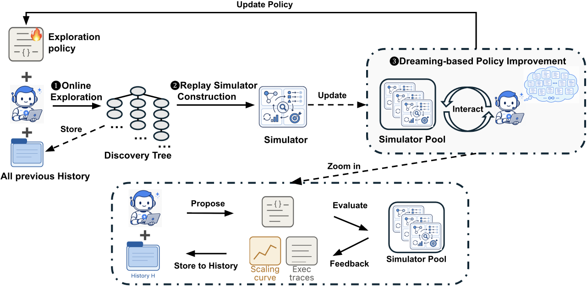
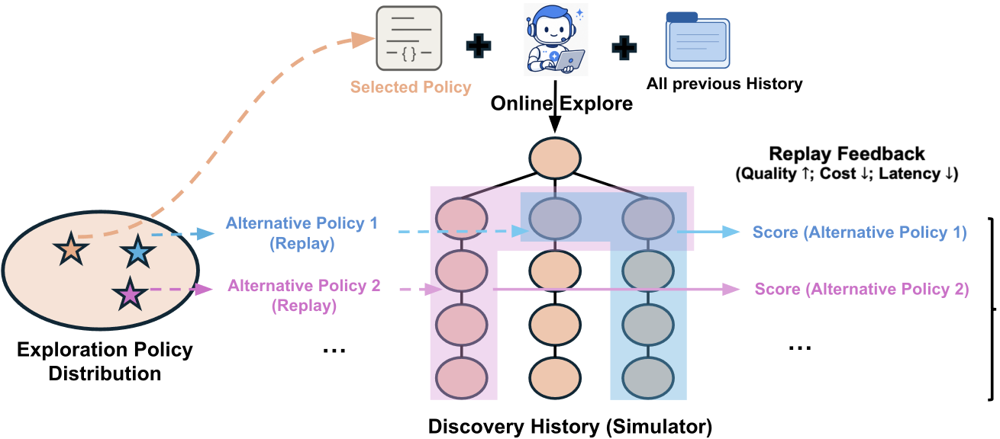
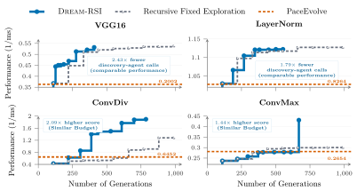
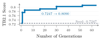
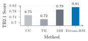
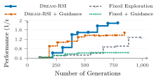
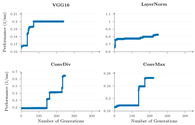

Dream-RSI：通过演化世界实现递归自我改进
摘要
递归自我改进正成为自主 AI 智能体不可或缺的能力，其进步取决于能否在复杂领域中发现高价值解决方案。有效探索推动着这一过程，但探索策略的管理与改进仍是主要瓶颈。当前系统面临一个根本困境：随着搜索空间扩大，固定策略无法适应，而在线策略优化则必须在庞大的元搜索空间中探索，同时面对来自长时程探索运行的延迟且昂贵的反馈。我们提出 Dream-RSI，这是一个支持可扩展、递归自我改进探索的框架。轻量级调度层使探索过程显式化且可编程，同时保持底层基础智能体不变。我们的关键见解是：积累的发现历史可以充当已探索到的搜索空间上的回放模拟器。通过在这个由历史发现树构建的模拟器中进行“梦境”探索， Dream-RSI 获得即时、低成本的离策略反馈，用于评估和改进探索策略，无需反复进行昂贵的在线评估。随后，改进后的策略重新部署到线上，推动进一步发现，在自我改进循环中不断扩充模拟器池。在 9 项任务（涵盖 4 个领域）上， Dream-RSI 实现了具有竞争力的质量，并在多种设置下提高了发现效率。
1 引言
递归自我改进（RSI）已成为自主 AI 系统的一项宏大目标 (Liu et al., 2026c)。RSI 背后的一个常见机制是迭代循环：智能体提出候选方案、评估结果，并将所得反馈融入后续迭代。这类循环已在算法设计 (Novikov et al., 2025; Romera-Paredes et al., 2024)、开放式数学优化 (Georgiev et al., 2025; Anthropic, 2026)、系统设计 (Jaber and Jaber, 2026; Cao et al., 2026)以及智能体自我改进 (Zhang et al., 2026b, c; Lee et al., 2026; Zheng et al., 2026a)等方面推动了显著进展。随着智能体能力增强、自我改进目标难度提高，发现过程需要在庞大的搜索空间中进行长时程探索，往往涉及数千次提案—评估循环 (Ye et al., 2026; OpenAI, 2026)。在这一规模下，探索调度变得至关重要 (Zheng et al., 2026b)：低效探索会浪费计算资源和时间，严重限制 RSI 的效率与可扩展性。
现有方法主要依赖人工设计的探索策略，这些策略在整个发现过程中保持固定 (Novikov et al., 2025; Yan et al., 2026b; Du et al., 2026; Jiang et al., 2026; Ye et al., 2026)。这类策略无法从积累的经验中学习，可能会反复将计算资源投入无法产生成果的搜索方向。因此，近期研究尝试在线优化探索策略 (Liu et al., 2026a)，但这面临两个根本瓶颈。首先，元层级反馈既有延迟又很昂贵。与评估单个候选方案不同，评估探索策略需要观察它如何在多次提案—评估循环中影响发现过程。其次，元策略空间十分庞大，因此必须尝试许多备选方案才能找到好的策略。这两点共同导致元层级改进成本高昂。每个策略都需要经过长时间的在线探索运行才能产生有用信号，使探索层的自我改进循环难以闭合。
为解决这些瓶颈，我们希望设计一种快速、低成本的发现过程模拟器，在昂贵的在线部署之前筛除不佳的探索策略。 令人意外的是，已完成的发现历史本身就提供了这样的模拟器。 以往工作仅将历史记录视为静态文本上下文 (Hu et al., 2025; Ouyang et al., 2026b) ，或将其用作微调的训练数据 (Yuksekgonul et al., 2026; Wang et al., 2025)。然而，一个已完成的发现过程天然就记录了一棵结构化的树，其中包含探索决策及其实际代码执行结果。类比基于模型的强化学习和 World Models (Ha and Schmidhuber, 2018; Hafner et al., 2023) (§2），这些发现历史可以充当 回放模拟器11 1 我们将 回放模拟器 与 世界 这两个术语交替使用。。图 2 表明，另一种策略可以在这棵预先记录的树中导航，以不同顺序遍历不同的分支子集，采用不同的并行分组和停止决策。由于所有执行结果都存储在本地，评估新策略只需读取过去的记录。这使元策略改进从昂贵的在线试错转变为快速的、基于模拟的“梦境”过程。

基于这一见解，我们提出 Dream-RSI，这是一个面向智能体驱动发现的框架，支持可扩展、递归自我改进的元探索。我们首先通过轻量级调度层使探索可编程；该层控制分支、并行与停止，同时保持底层基础智能体不变。为改进这一策略， Dream-RSI 遵循自我改进循环（图 1): (1) 在线探索，当前策略驱动真实环境中的发现过程并记录执行轨迹； (2) 回放模拟器构建，将记录的发现树转化为可复用的回放模拟器池；以及 (3) 基于梦境的策略改进，通过在模拟器中进行梦境探索来低成本评估候选策略。更新后的策略重新部署到线上，产生新经验以扩充模拟器池，从而在元探索层闭合 RSI 循环。我们对 Dream-RSI 在四个领域的 9 项发现任务上进行评估。在 算法工程 （Lasso 路径求解器）上，它的表现优于 sklearn 和强基线，同时智能体调用次数的减少倍数最高达到 ；比较基线为 SimpleTES。在数学优化方面，它在三项任务中的两项上达到或超过所比较基线中的最佳结果。在 GPU 内核工程 （KernelBench）上，它达到相近速度时，生成次数的减少倍数为 – ；或者在相当预算下，内核性能最高达到原来的 。在 harness 优化方面，它使初始 harness 的得分提高超过 8 分，评测基准为 Terminal-Bench 2.1。
我们的贡献如下： 1) 将历史用作回放模拟器。 我们将已完成的发现历史重新视为回放模拟器，使延迟的探索反馈能够复用，从而低成本评估元探索策略。 2) 元层 RSI 循环。 我们提出 Dream-RSI，据我们所知，这是首个利用发现历史作为回放模拟器、闭合元层 RSI 循环的框架。 3) 实证验证。 在四个领域的九项任务上， Dream-RSI 实现了具有竞争力的发现质量，并在多种设置下提高了发现智能体的调用效率。

2 动机：将发现历史用作回放模拟器
设想一个智能体在陌生环境中导航。初次尝试时，它四处探索、遇到死路并回溯，但也在这一过程中构建了一张地图。这张地图可以复用：新策略可以在地图上规划、跳过已知死路、重新考察先前的选择，并比较不同路线，而无需再次实际走过这些路线 (Gupta et al., 2017)。这就是基于模型的强化学习的逻辑 (Sutton, 1990; M. Moerland et al., 2023)。一个描述环境如何响应动作的模型，允许策略在模拟中训练或评估，而无需反复进行真实交互 (Ha and Schmidhuber, 2018)。Dreamer 系列 (Hafner et al., 2019, 2020, 2023, 2025) 是最鲜明的例子：从收集的经验中学习紧凑的动力学模型，然后通过在模型内想象轨迹来改进策略。
长时程发现具有相同结构。探索策略决定追寻哪些方向、改进哪些候选方案、在哪些方向并行分支，以及何时停止。在线执行会留下结构化历史，包括探索过的分支、作出的决策、产生的成本和观察到的结果。如图 2所示，我们将这段历史视为经验性回放模拟器：一个以已观察到的发现空间为依据构建的模型。在该模拟器内部，不同探索策略只需在记录的发现树中走出不同路径，选择其他分支、另一种顺序、不同并行度或更早的停止点。为该路径评分只需揭示沿途已存储的结果；无需重新运行编码智能体或评估器。因此，一次昂贵的在线运行即可支持多次低成本的备选策略评估。
3 Dream-RSI：通过演化世界实现 RSI
如图 1, Dream-RSI 在在线探索和用于策略评估的离线“梦境”之间交替进行，以改进分配发现计算资源的 探索策略 。在在线探索运行中，探索策略指挥一个固定的 发现智能体 生成树状结构的发现轨迹，其中每个树节点都是一次发现尝试，并由一个固定的 评估器评分。随后， 发现树 成为一个 回放世界：其他策略可以依据存储的结果重新评估。在离线梦境阶段，一个固定智能体迭代修改探索策略的代码，每次修改都在所有已存储的回放世界中接受评估。随后，将最佳版本部署到下一次在线探索运行中。只有策略代码发生变化；模型、评估器和执行接口保持固定。
发现树与共享决策接口。
发现树的根为 ，即工作空间的初始状态。每个非根节点 恰好有一个 主要父节点 （根节点或先前的某个节点），它决定该次尝试从何处开始：发现智能体恢复父节点保存的工作空间，并继承其累积观测作为上下文，以生成节点 中的尝试。节点 保留与自身相关的全部先前生成历史、自身的文件系统快照，以及评估分数 。分数由固定协议产生，数值越大越好。我们定义根节点分数为 。无论在线探索运行还是离线评估，探索策略均观察一棵树 ，该树最初仅包含根节点，并选择树 中的节点继续探索。可选节点为 ，其中包含根节点及当前树中的所有叶节点。我们假设存在 个并行工作进程，每个进程一次运行一个生成—评估请求（例如并发 API 调用）。对于当前树 ，探索策略的动作是一个批次 ，其中 为可行批次集合。该批次既决定探索从何处继续，也决定有多少次尝试并发运行。在线和离线阶段使用相同的决策接口，区别仅在于动作后状态如何转移：前者真实执行，后者进行回放。
在线探索运行。
令 表示在线探索运行的迭代编号，初始策略为 ，初始历史为空，即 。在迭代 中，固定策略 引导发现智能体生成一次新的在线探索运行，并将已完成的发现历史 作为可用上下文。这些历史为探索提供信息，但与正在构建的树保持分离。令 表示已完成轮次为 、迭代编号为 时的发现树，其中 ，并允许最多 轮。在轮次 时，策略选择 ，并将每个 分配给一个工作进程，该进程恢复 的工作空间，生成候选方案并进行评估。这些尝试并行运行，每次都为所选父节点添加一个子节点。因此，每个 都新增一个子节点，得到 。从 到 的转移是随机的，因为智能体可能从同一工作空间产生不同结果。在下一轮中，每个新增节点成为其分支上可选择的叶节点，而 仍可被选择以开启新分支。当 成立，或完成 轮后，探索运行结束。探索运行终止后，其最终树被记录为 并追加到历史中，得到 。随后，该方法使用以下历史进入离线评估阶段： .
离线评估。
在 固定的情况下，我们的方法构建并评估 个策略版本 ，其中 。每个版本都在每棵历史树上接受评估，历史树为 , ，所采用的预算控制参数为 ，其中 控制策略的预算偏好。所得反馈用于推动下一个策略版本的产生。我们用以下索引分别标识策略版本： ；回放世界： ；预算偏好： ；以及单次回放内的决策轮次： 。外层索引 固定，下面省略。对于每个 ，回放的起始状态为 ，其中 是完成 轮后揭示的子树。记录的树 始终不变；只有已观察到的部分会增长。在轮次 ，当前策略 以 为条件，选择 ，选择依据是已揭示的观测。与在线执行不同，离线回放以确定性的方式返回所选节点已记录的子节点，而不生成新的候选。因此， ，其中 包含以下节点的未观测子节点： ，它们位于 中，且尚未被当前已揭示的子树观测到。对于 ，它是 唯一已记录的子节点（若存在）。对于 ，它是以下节点最早创建的子节点： ，且位于 之外，从而开启一条此前未揭示的分支。在这两种情况下， ，当不再存在未观测的后续节点时成立。新揭示的节点会在策略作出下一次决策之前暴露其已存储的观测。回放至多允许 轮，每个非空批次计为一个已完成轮次，并在以下情况下停止： 、完成 轮之后，或当 。令 表示终止时已完成的轮数。最终观测到的子树为 。因此，回放衡量的是策略沿每条分支探索到何种深度、如何将尝试组织成并行批次，以及何时开启新分支或停止。这些选择因策略和预算偏好而异，但每条分支都按照其记录的父子顺序遍历，且不会产生 之外的任何结果。
回放目标。
回放目标在不同预算偏好下平衡发现质量与生成成本，同时鼓励并行执行。对于每个用于评估的回放世界 ，定义 以及 ，分别表示已评估的非根节点总数和已记录的最佳分数。对于每个 ，令 表示该次回放所代表的发现智能体调用次数。令 为已揭示的非根节点中的最佳分数，即 ，当 时；并设 ，在其他情况下。我们将达到的质量归一化为 。遍历不同预算可得到质量—成本点 。若另一个点所用调用次数不更多、达到的质量不更低，且至少有一项严格改善，则该点被支配。令 为按调用次数递增排序的互不相同的非支配点，并设 。回放分数为
| (1) |
这里， 控制并行性惩罚的强度。第一项衡量质量—成本帕累托前沿所支配的归一化面积，奖励以更少发现智能体调用达到更高质量的策略。第二项衡量遍历不同预算时每次调用所对应的平均已完成串行轮数，从而鼓励并行执行更多调用的策略；调用次数为零的回放对该项的贡献为零。
策略改进与选择。
策略版本 通过其在 上的平均回放分数进行评估，记为 。离线阶段以如下策略开始： 。在每一步 ，一个 策略开发智能体 检查以下策略的回放轨迹和分数： ，并结合先前修订的反馈，识别成功的决策和反复出现的失败。随后，它将可执行策略代码重写为 ，并在相同的 个回放世界上进行评估。下一个在线策略是分数最高的候选，即 ，其中 。由于当前探索运行策略 包含在候选之中， ，所以 始终不劣于 ，比较依据是它们在以下历史上的平均回放分数： .
4 实验
我们评估 Dream-RSI 在算法工程、内核优化、数学优化和智能体运行框架优化中的表现。我们主要使用 Gemini-3.1-Pro 开展科学发现实验，并补充使用 Gemini-3.7-Flash 的 Lasso 实验，以评估其对不同基础模型的适用性。对于智能体运行框架优化，我们使用 Claude Opus 4.8 配合 Claude Code。在科学发现任务中，我们主要的受控基线是 Recursive Fixed Exploration。两种方法使用相同的发现智能体、评估器、初始化、每轮预算上限以及同一套人工设计的初始策略。从第二轮开始，Recursive Fixed Exploration 保持策略不变，而 Dream-RSI 通过对累积的发现历史进行基于回放的梦境推演来更新策略。对于智能体运行框架优化，我们关注端到端性能，由于成本高昂而省略固定策略对照：额外进行一次完整搜索的成本估计超过 $100,000。我们以发现智能体的累计调用次数衡量发现成本。
4.1 内核工程
其目标是通过 内核工程 发现高性能内核实现，同时保持数值正确性。我们使用四个有代表性的 KernelBench 任务 (Ouyang et al., 2025): VGG16, LayerNorm, ConvDiv和 ConvMax。候选方案按执行性能评分，以运行时间的倒数（）衡量，并须通过与参考实现对照的正确性检查。以 Gemini-3.1 Pro 作为编码智能体，我们比较 Dream-RSI 与 Recursive Fixed Exploration 在相同评估协议和初始化条件下的表现，同时与强基线 PaceEvolve (Yan et al., 2026b)进行比较；为保证公平，我们将其最长发现时间限制为两天。
结果。
图 3 展示了随着生成次数增加的发现轨迹。在 VGG16 和 LayerNorm 上， Dream-RSI 达到相当的最终性能；对照与本方法所需生成次数之比分别为 和 。在 ConvDiv 和 ConvMax 上，在相近预算下，其性能分别为对照的 和 。因此，在递归轮次间调整探索策略，同时提升了长期发现的效率与效果，并且 Dream-RSI 在内核性能上超过 PACEvolve（详细的 PACEvolve 扩展曲线见附录 C）。附录 E.2 给出了所发现的 ConvDiv 内核。它并非孤立地优化卷积，而是围绕下游池化和归约重构算子链。相邻的卷积输出立即进行最大池化，而宽度方向的池化与后续归约直接基于驻留寄存器的数值运行，避免将卷积特征图和池化特征图实体化存储。缩放、平均和偏置累加等线性操作则推迟到一次轻量级最终归约中完成。

| 方法 | 大语言模型 | 和差问题（) | 自相关（) | 圆形填充（) |
| AlphaEvolve | Gemini-2.0 Pro + Flash | – | 1.455700 | 2.635862 |
| AlphaEvolveV2 | Gemini-2.0 Pro + Flash | 1.121936 | – | 2.635983 |
| OpenEvolve | - | – | 1.460000 | - |
| CodeEvolve | - | – | – | 2.635980 |
| ShinkaEvolve | 混合 | – | 1.457800 | 2.635982 |
| TTS-Discovery | Qwen3-8B | – | – | 2.635983 |
| ThetaEvolve | Distilled-Qwen3-8B | – | 1.493000 | 2.635983 |
| EvoX | Gemini-3.0-Pro | – | 1.458900 | 2.635900 |
| SimpleTES | GPT-OSS-120B | 1.143975 | 1.453675 | 2.635983 |
| 我们的方法 | ||||
| Recursive Fixed Exploration | Gemini-3.1-Pro | 1.144047 | 1.456001 | 2.635983 |
| Dream-RSI | Gemini-3.1-Pro | 1.145427 | 1.456375 | 2.635983 |
4.2 数学优化
我们进一步评估 Dream-RSI 在三个数学发现任务上的表现，涵盖离散组合优化、几何优化和函数优化： 和差问题, 圆形填充以及 自相关不等式。这三个任务的形式化定义见附录 B.3。我们通过 Gemini CLI 使用 Gemini-3.1 Pro 作为两种方法的发现智能体，运行 10 轮。对于每个任务，智能体根据任务特定目标，迭代提出并评估候选构造或优化过程。
结果。
表 1 汇总了结果。 Dream-RSI 获得的和差问题分数为 ，超过 SimpleTES 和 Recursive Fixed Exploration。在圆形填充任务中，其结果达到 ，追平对比方法中所报告的最强结果。对于自相关， Dream-RSI 获得 ，与现有发现系统相比保持竞争力。
| 方法 | 模型 | 计算量 | 非生物 | 生物 | 平均 | ||||
| Gisette | RCV1 | DNA | Leukemia | Colon | Duke Breast | ||||
| 既有求解器 | |||||||||
| sklearn | – | – | 11275.2 | 252881.7 | 93.8 | 227.2 | 229.8 | 374.0 | 44180.3 |
| glmnet | – | – | 9063.6 | 73072.8 | 351.9 | 45.0 | 24.2 | 47.7 | 13767.5 |
| SimpleTES | gpt-oss-120b | 51,200 | 3141.9 | 19625.6 | 15.9 | 15.5 | 11.6 | 18.1 | 3804.8 |
| SimpleTES | gpt-oss-120b | 51,200 | 8651.0 | 41143.1 | 37.6 | 28.2 | 19.5 | 31.1 | 8318.4 |
| 我们的方法 | |||||||||
| Recursive Fixed Exploration | Gemini-3.1-Pro | 550 | 1861.8 | 19550.1 | 41.5 | 26.1 | 14.5 | 28.4 | 3587.1 |
| Gemini-3.7-Flash | 3200 | 1133.1 | 13873.0 | 29.8 | 24.1 | 15.7 | 24.4 | 2516.7 | |
| Dream-RSI | Gemini-3.1-Pro | 317 | 2841.0 | 14616.0 | 49.9 | 30.2 | 16.4 | 32.5 | 2931.0 |
| Gemini-3.7-Flash | 1879 | 1091.9 | 12923.4 | 31.4 | 21.0 | 12.2 | 23.6 | 2350.6 | |
(a) 最终运行时间性能（ms）。
(b) 递归发现动态。
4.3 算法工程
在此任务中，我们将 Lasso 正则化路径 作为算法工程任务；它是高维统计中的一种基础计算原语，广泛用于基因组学和金融等领域的模型选择与交叉验证。我们沿用 SimpleTES 的基准设置 (Ye et al., 2026)，其目标是在保持数值正确性的同时，发现完整 Lasso 正则化路径的高效实现。在发现过程中，我们使用与 SimpleTES 相同的 17 个合成实例，在维度、稀疏度、特征相关性和活跃集结构方面覆盖多种问题情形。为了评估所发现算法能否泛化到搜索分布之外，我们还在涵盖生物和非生物领域的六个留出下游数据集上进行评估。我们与标准 Lasso 求解器 sklearn (Pedregosa et al., 2011) 和 glmnet (Friedman et al., 2010)以及 SimpleTES (Ye et al., 2026)进行比较。我们运行受控基线和 Dream-RSI ，均为 5 轮。
主要结果。
图 4(a) 汇总了 Lasso 发现结果。在两种发现智能体基础模型上， Dream-RSI 均比 Recursive Fixed Exploration 实现了更好的下游质量—计算量权衡。使用 Gemini-3.1 Pro 时，六个留出数据集上的平均运行时间从 3587.1 ms 降至 2931.0 ms，同时仅使用 317 次发现智能体调用，而固定探索需要 550 次调用。使用 Gemini-3.7-Flash 时， Dream-RSI 进一步将平均运行时间从 2516.7 ms 降至 2350.6 ms，调用次数为 1879，而非 3200。尽管使用的发现计算量显著更少，所得求解器仍在全部六个留出数据集上超过标准 sklearn 和 glmnet 实现。以 SimpleTES 所报告的 51,200 次生成为参照，SimpleTES 与我们的 Pro、Flash 运行的发现智能体调用次数之比分别约为 162 和 27 ，同时下游平均运行时间更低，但这些比较使用了不同的基础模型。对于 3.1 Pro，相比固定探索的平均改进由 RCV1 驱动，尽管它在其他五个数据集上的运行时间更长。对于 3.7 Flash，六个数据集中有五个的运行时间得到改善。
递归发现动态。
图 4(b) 展示了各递归发现轮次中，下游性能随累计发现计算量变化的轨迹。按设计，两种方法在第一轮表现完全相同。此后，Recursive Fixed Exploration 保持静态探索策略，而 Dream-RSI 通过对累积发现历史进行梦境推演，迭代改进并重新部署其策略。到最后一轮， Dream-RSI 在两种基础模型上均以更少的发现智能体调用，实现了比 Recursive Fixed Exploration 更低的下游平均运行时间。我们进一步检查所发现的求解器，其实现见附录 E.1。不同于 SimpleTES根据问题维度在 LARS 和坐标下降之间切换，所发现的求解器使活跃集优化本身具备自适应性。它将强规则筛选与 Cauchy–Schwarz KKT 剪枝相结合，仅在必要时计算精确梯度，并在剪枝失去效果时退回到全面刷新。
4.4 智能体运行框架优化

(a) 发现过程

(b) 详细比较
我们进一步评估 Dream-RSI 在 智能体运行框架优化 任务上的表现，其目标是改进固定语言模型周围的程序，包括在智能体执行期间如何存储、检索和呈现信息。我们沿用 Meta-Harness 的设置 (Lee et al., 2026) ，并以 Terminus-Kira 作为初始运行框架启动发现过程。每个发现的运行框架均在完整的 Terminal-Bench 2.1 (Merrill et al., 2026) 测试集的 89 个任务上进行评估，每个任务独立运行两次。我们使用 Claude Opus 4.8 配合 Claude Code，同时充当发现智能体和策略开发智能体，而运行框架评估也使用 Claude Opus 4.8。我们按照 Meta-Harness 的原始搜索协议进行复现，搜索和评估均使用 Opus 4.8。
结果。
图 5 表明， Dream-RSI 在整个发现过程中持续改进运行框架，将完整测试集分数从 0.7247 提升至 0.8090。在相同评估设置下，所发现的运行框架也超过 Claude Code（0.75）和 Meta-Harness（0.79）。
5 进一步分析
回放世界累积的分析
| 方法 | 性能 | 计算量 |
| Dream-RSI （全部历史） | 1.90 | 786 |
| 仅当前历史 | 1.59 | 430 |
我们研究跨递归轮次累积回放世界的影响。表 2 表明， Dream-RSI 使用完整发现历史时达到 1.90 的性能，而将回放限制在当前轮次时仅为 1.59。累积回放世界可能有助于学习更通用的探索策略，避免因拟合单一世界而出现过于保守的探索。
长时程发现中历史归纳偏置的分析

我们进一步研究历史归纳偏置的性质如何影响长时程发现。利用历史的一种自然替代方案，是将先前轨迹提炼为高层次的方向性见解，并将其直接注入提示词，为后续轮次提供明确的语义指导。为评估这种提示词层面的语义指导的有效性，我们将其同时应用于递归固定探索和 Dream-RSI。如图 6所示，明确的方向性指导使这两种方法在 ConvDiv 上的最终性能均有所下降。这表明此类指导可能会限制探索。
探索行为演变分析
图 7 展示了学习得到的探索策略如何在 ConvDiv 的递归轮次中演变。探索策略呈现出自适应模式：随着性能提升，它起初会节省发现计算量（例如，将评估的尝试次数从 110 减至 50）。当后续进展陷入平台期时，它会再次增加探索投入，同时性能进一步提高。
6 相关工作
AI 驱动的科学与算法发现。
基于大语言模型的发现系统利用已有产物和反馈，迭代生成、评估并改进候选解，例如 AlphaEvolve (Novikov et al., 2025), OpenEvolve (Sharma, 2025), CodeEvolve (Assumpção et al., 2025), ShinkaEvolve (Lange et al., 2026), PACEvolve (Yan et al., 2026b), DeltaEvolve (Jiang et al., 2026) 以及 MLEvolve Du et al. (2026)。较新的工作更强调探索本身的重要性：SkyDiscover 提供自适应发现基础设施 (Liu et al., 2026b)，SwarmResearch 动态调度多个搜索分支 (Virk et al., 2026)，而 EvoX (Liu et al., 2026a) 则显式优化搜索策略，而非仅优化候选解。这一转变使探索成为元层面的优化问题，但探索策略的有效监督信号成本高且具有延迟，因为其质量往往只有在长时间的发现展开后才会显现。
自我演化智能体。
更广泛的一类工作研究在交互过程中改进自身组件的智能体。已有方法演化的对象包括模型权重 (Huang et al., 2026c, a; Li et al., 2026b)、智能体运行框架 (Lee et al., 2026; Zhang et al., 2026b)、上下文 (Zhang et al., 2026d)、技能 (Zhang et al., 2026a; Ouyang et al., 2026a; Wu et al., 2026b)、通过测试时学习改进的模型行为 (Wang et al., 2025; Yuksekgonul et al., 2026; Yan et al., 2026a; Wu et al., 2026a)、评判准则 (Xiong et al., 2026)、环境 (Huang et al., 2026b; Li et al., 2026a, c) 以及其他应用 (Dai et al., 2026)。这些方法大多在 对象层面运行，改进用于任务执行或推理的组件。近期工作开始优化元层面机制，包括搜索策略和自我改进流程 (Liu et al., 2026a; Yan et al., 2026a; Wang et al., 2026; Zhang et al., 2026c; Kim et al., 2026)。然而，此类元层面策略很难改进，因为其质量往往只有经过代价高昂的长时程展开后才会显现。 Dream-RSI 将累积的发现历史转化为回放模拟器，用于探索策略的离策略评估与改进，随后将选中的策略重新部署于新的在线发现，从而闭合递归自我改进循环。
记忆、历史与经验复用。
已有工作将智能体经验复用为搜索历史、上下文、记忆、可复用技能或训练信号。DeltaEvolve 通过语义增量组织演化历史 (Jiang et al., 2026)；SwarmResearch 和 MLEvolve 使用跨分支信息或回顾性信息指导后续搜索 (Virk et al., 2026; Du et al., 2026)；其他工作则通过演化上下文、更广泛的运行框架状态、库或技能，改进智能体获取和保留经验的方式 (Zhang et al., 2026d; Lee et al., 2026; Xu et al., 2026; Ouyang et al., 2026a)。我们采用不同的视角：我们不只是将探索历史用作下一次决策的上下文或记忆，而是将其组织为 回放模拟器 ，使大量备选探索控制器能够在其中以低成本接受评估。这将先前收集的发现经验转化为元层面优化可复用的反馈，缓解训练信号稀缺且成本高的问题。
7 结论
我们提出了 Dream-RSI，这是一个在长时程发现中对探索策略进行递归自我改进的框架。 Dream-RSI 的核心思想是将累积的发现历史从静态上下文转化为主动、可回放的模拟器，直接针对元优化的核心瓶颈：反馈延迟且成本高昂。通过在由历史发现树构建的回放模拟器中“做梦”， Dream-RSI 能够以可忽略的执行成本快速评估候选探索策略。随后，改进的策略被重新部署到线上，推动进一步发现并扩充模拟器池，从而闭合递归自我改进循环。我们的实验表明，该方法在多种领域具有竞争力的发现质量，并在若干设置下提高了发现智能体调用效率。
参考文献
- Learning more about claude’s mathematical capabilities. Note: https://www.anthropic.com/research/riemann-zetaAccessed: 2026-08-13 Cited by: §1.
- CodeEvolve: an open source evolutionary coding agent for algorithmic discovery and optimization. arXiv preprint arXiv:2510.14150. Cited by: §6.
- K-search: llm kernel generation via co-evolving intrinsic world model. arXiv preprint arXiv:2602.19128. Cited by: §1.
- It takes two to match: co-evolving generative retriever with reinforcement learning. arXiv preprint arXiv:2609.00638. Cited by: §6.
- MLEvolve: a self-evolving framework for automated machine learning algorithm discovery. arXiv preprint arXiv:2606.06473. Cited by: §1, §6, §6.
- Regularization paths for generalized linear models via coordinate descent. Journal of statistical software 33, pp. 1–22. Cited by: §4.3.
- Mathematical exploration and discovery at scale. arXiv preprint arXiv:2511.02864. Cited by: §1.
- Cognitive mapping and planning for visual navigation. In Proceedings of the IEEE conference on computer vision and pattern recognition, pp. 2616–2625. Cited by: §2.
- World models. arXiv preprint arXiv:1803.10122 2 (3), pp. 440. Cited by: §1, §2.
- Dream to control: learning behaviors by latent imagination. arXiv preprint arXiv:1912.01603. Cited by: §2.
- Mastering atari with discrete world models. arXiv preprint arXiv:2010.02193. Cited by: §2.
- Mastering diverse domains through world models. arXiv preprint arXiv:2301.04104. Cited by: §1, §2.
- Training agents inside of scalable world models. arXiv preprint arXiv:2509.24527. Cited by: §2.
- Memory in the age of ai agents. arXiv preprint arXiv:2512.13564. Cited by: §1.
- G-zero: self-play for open-ended generation from zero data. arXiv preprint arXiv:2605.09959. Cited by: §6.
- EnvHarness: awakening static worlds for agent learning. arXiv preprint arXiv:2608.19880. Cited by: §6.
- R-zero: self-evolving reasoning llm from zero data. In International Conference on Learning Representations, Vol. 2026, pp. 130770–130790. Cited by: §6.
- AutoKernel: autonomous gpu kernel optimization via iterative agent-driven search. arXiv preprint arXiv:2603.21331. Cited by: §1.
- Deltaevolve: accelerating scientific discovery through momentum-driven evolution. arXiv preprint arXiv:2602.02919. Cited by: §1, §6, §6.
- Metan: recursive self-improvement through emergent depth. arXiv preprint arXiv:2608.24735. Cited by: §6.
- Shinkaevolve: towards open-ended and sample-efficient program evolution. In International Conference on Learning Representations, Vol. 2026, pp. 74026–74078. Cited by: §6.
- Meta-harness: end-to-end optimization of model harnesses. arXiv preprint arXiv:2603.28052. Cited by: §1, §4.4, §6, §6.
- Recursive synthesis for long-horizon terminal tasks. arXiv preprint arXiv:2608.05466. Cited by: §6.
- Mm-zero: self-evolving multi-model vision language models from zero data. arXiv preprint arXiv:2603.09206. Cited by: §6.
- Long-horizon-terminal-bench: testing the limits of agents on long-horizon terminal tasks with dense reward-based grading. arXiv preprint arXiv:2607.08964. Cited by: §6.
- Evox: meta-evolution for automated discovery. arXiv preprint arXiv:2602.23413. Cited by: §1, §6, §6.
- SkyDiscover: a flexible, adaptive framework for ai-driven scientific and algorithmic discovery. In Proceedings of the ACM Conference on AI and Agentic Systems, CAIS ’26, pp. 1223–1227. External Links: Document, Link Cited by: §6.
- The path to recursive self-improving agents: foundation, framework, and future directions. Preprints. External Links: Document, Link Cited by: §1.
- Model-based reinforcement learning: a survey. Foundations and Trends in Machine Learning 16 (1), pp. 1–118. Cited by: §2.
- Terminal-bench: benchmarking agents on hard, realistic tasks in command line interfaces. In International Conference on Learning Representations, Vol. 2026, pp. 40903–40986. Cited by: §4.4.
- Alphaevolve: a coding agent for scientific and algorithmic discovery. arXiv preprint arXiv:2506.13131. Cited by: §1, §1, §6.
- On the navier–stokes millennium prize problem. Note: https://openai.com/index/navier-stokes-solution/Accessed: 2026-09-10 Cited by: §1.
- Kernelbench: can llms write efficient gpu kernels?. arXiv preprint arXiv:2502.10517. Cited by: §B.1, §4.1.
- Skillos: learning skill curation for self-evolving agents. arXiv preprint arXiv:2605.06614. Cited by: §6, §6.
- Reasoningbank: scaling agent self-evolving with reasoning memory. In International Conference on Learning Representations, Vol. 2026, pp. 94327–94354. Cited by: §1.
- Scikit-learn: machine learning in python. the Journal of machine Learning research 12, pp. 2825–2830. Cited by: §4.3.
- Mathematical discoveries from program search with large language models. Nature 625 (7995), pp. 468–475. Cited by: §1.
- OpenEvolve: an open-source evolutionary coding agent External Links: Link Cited by: §6.
- Integrated architectures for learning, planning, and reacting based on approximating dynamic programming. In Machine Learning Proceedings 1990, B. Porter and R. Mooney (Eds.), pp. 216–224. External Links: ISBN 978-1-55860-141-3, Document, Link Cited by: §2.
- SwarmResearch: orchestrating coding agents for open-ended discovery. arXiv preprint arXiv:2607.02807. Cited by: §6, §6.
- Thetaevolve: test-time learning on open problems. arXiv preprint arXiv:2511.23473. Cited by: §1, §6.
- MetaSkill-evolve: recursive self-improvement of llm agents via two-timescale meta-skill evolution. arXiv preprint arXiv:2607.05297. Cited by: §6.
- Teaching llms to self-evolve: cultivating core meta-skills with reinforcement learning. arXiv preprint arXiv:2607.21971. Cited by: §6.
- AgenticRecTune: multi-agent with self-evolving skillhub for recommendation system optimization. arXiv preprint arXiv:2604.26969. Cited by: §6.
- Rubrics as visual-repair context for self-evolving ui-to-code generation. arXiv preprint arXiv:2608.24138. Cited by: §6.
- Test-time learning with an evolving library. arXiv preprint arXiv:2605.14477. Cited by: §6.
- PACEvolve++: improving test-time learning for evolutionary search agents. arXiv preprint arXiv:2605.07039. Cited by: §6.
- Pacevolve: enabling long-horizon progress-aware consistent evolution. arXiv preprint arXiv:2601.10657. Cited by: Appendix C, Appendix C, §1, §4.1, §6.
- Evaluation-driven scaling for scientific discovery. arXiv preprint arXiv:2604.19341. Cited by: §B.1, §1, §1, §4.3.
- Learning to discover at test time. arXiv preprint arXiv:2601.16175. Cited by: §1, §6.
- Coevoskills: self-evolving agent skills via co-evolutionary verification. arXiv preprint arXiv:2604.01687. Cited by: §6.
- Darwin gödel machine: open-ended evolution of self-improving agents. In International Conference on Learning Representations, Vol. 2026, pp. 104223–104294. Cited by: §1, §6.
- Hyperagents. arXiv preprint arXiv:2603.19461. Cited by: §1, §6.
- Agentic context engineering: evolving contexts for self-improving language models. In International Conference on Learning Representations, Vol. 2026, pp. 86069–86100. Cited by: §6, §6.
- LLMs improving llms: agentic discovery for test-time scaling. arXiv preprint arXiv:2605.08083. Cited by: §1.
- Parallel-r1: towards parallel thinking via reinforcement learning. In International Conference on Learning Representations, Vol. 2026, pp. 121144–121166. Cited by: §1.
附录 A AI 使用声明
附录 B 详细实验设置
B.1 评估环境
Lasso 正则化路径发现。
我们在一台 KVM 虚拟机中评估候选求解器，该虚拟机配备 AMD EPYC 7B12 处理器、8 个 vCPU 和 32 GB 内存，运行基于 Debian 的 Linux。评估协议遵循 Ye et al. (2026).
GPU 内核工程。
我们在 NVIDIA L40S GPU 上评估候选内核。根据 KernelBench 官方协议，以参考 PyTorch 实现为基准检查数值正确性 (Ouyang et al., 2025).
数学优化。
我们使用与 Lasso 正则化路径发现相同的硬件环境。
运行框架优化。
我们在一台配有 96 个物理核心（192 个逻辑 CPU）和 708 GiB 内存的 CPU 服务器上评估候选运行框架，并使用 Docker 提供隔离的任务执行环境。
B.2 发现配置
表 3 汇总了发现配置。每个离线阶段评估当前策略以及三个新生成的策略版本（）。括号内的预算分解给出了最大分支数以及每个分支的最大尝试次数（包括初始尝试）。这些预算是上限；实际的发现智能体调用次数取决于策略的分配与停止决策。
| 任务 | 发现模型 | ||||
| Lasso | Gemini-3.1-Pro | 5 | 10 | 4 | |
| Lasso | Gemini-3.7-Flash | 5 | 32 | 4 | |
| VGG16 | Gemini-3.1-Pro | 9 | 10 | 4 | |
| LayerNorm | Gemini-3.1-Pro | 9 | 10 | 4 | |
| ConvDiv | Gemini-3.1-Pro | 9 | 10 | 4 | |
| ConvMax | Gemini-3.1-Pro | 9 | 10 | 4 | |
| 和差问题 | Gemini-3.1-Pro | 10 | 10 | 4 | |
| 自相关 | Gemini-3.1-Pro | 10 | 10 | 4 | |
| 圆堆积 | Gemini-3.1-Pro | 10 | 10 | 4 | |
| 运行框架优化 | Claude Opus 4.8 | 9 | 4 | 4 |
B.3 详细任务描述
问题 1（Lasso 正则化路径）
给定特征矩阵 、响应 以及递减序列 ，定义
候选求解器返回近似系数 。若满足以下条件，则通过基准的目标值检查：
其中，正确性在不同于计时实例的新实例上检查。如果任何一项必要检查失败，则搜索得分为零。
否则，令 表示计时实例，令 表示计算完整正则化路径所需的时间，对应的实例为 ，则搜索得分为
问题 2（和差问题）
和差问题要求寻找一个有限集合 ，使其归一化和集相对于其归一化差集尽可能大。目标为
其中
目标是构造一个有限集合 ，使以下值最大化： .
问题 3（单位正方形内的圆堆积）
对于 ，圆堆积任务要求寻找圆心 以及半径 ，使每个圆都位于单位正方形内，且任意两个圆互不重叠：
目标是最大化
问题 4（自相关不等式）
对于可积函数 ，定义其自卷积
第一自相关不等式。 寻找一个非负可积函数 ，其支集位于 ，使得
目标是最小化
第二自相关不等式。 寻找一个非负可积函数 ，其支集位于 ，使得
目标是最大化
第三自相关不等式。 寻找一个可积函数（可取负值） ，其支集位于 ，使得
目标是最小化
问题 5（VGG16）
VGG16 任务要求高效实现 VGG16 网络的前向传播。输入为
，网络由五个卷积块组成。每个卷积采用 的卷积核，步长为 ，填充为 ，随后应用 ReLU 激活函数。五个卷积块的通道配置为
，每个卷积块后均进行 的最大池化，步长为 。
经过最后的池化层后，得到的 特征图被展平，随后通过三个全连接层，
其中前两层后应用 ReLU 激活函数。禁用 Dropout（）。最终输出为
目标是在数值上与参考 PyTorch 计算等价的前提下，尽量缩短 GPU 执行时间。
问题 6（ConvDiv）
ConvDiv 任务依次应用3D卷积、缩放、池化和归约操作。输入为
首先应用3D卷积，其输入通道数为 ，输出通道数为 ，卷积核大小为 ，且不进行填充：
将卷积输出除以 ，然后进行 的最大池化：
随后，在三个空间维度上进行全局平均池化，
得到
然后加上可学习的逐通道偏置
，再沿通道维度求和：
输出形状为
目标是在基准的数值容差范围内精确计算这一算子链，同时尽量缩短 GPU 执行时间。
问题 7（ConvMax）
ConvMax 任务先进行3D卷积，随后依次进行最大池化、逐通道 log-sum-exp 归约和 ReLU。输入为
3D卷积将 个输入通道映射为 个输出通道，使用 的卷积核，步长为 ，填充为 :
随后进行 的最大池化，步长为 ,
然后使用 log-sum-exp 沿通道维度进行归约：
最终输出为
目标是在数值上与参考计算等价的前提下，尽量缩短 GPU 执行时间。
问题 8（层归一化）
LayerNorm 任务对输入张量进行层归一化，输入为
归一化在每个批次元素的其余三个维度上独立进行。令
对于每个批次元素 ，定义
以及
归一化后的输出为
其中
是可学习的仿射参数，且 .
输出与输入的形状相同，为
目标是在基准的数值容差范围内匹配参考 LayerNorm 计算，同时尽量缩短 GPU 执行时间。
附录 C PACEvolve (Yan et al., 2026b) 在 KernelBench 上的结果

附录 D 提示词
为便于复现，我们提供在线探索和基于回放的探索策略改进所使用的提示词。由美元符号或花括号包围的变量在执行前由运行时系统实例化。
D.1 探索提示词
以下提示词用于在在线探索期间指导发现智能体。它要求智能体在提出新解之前检查全部可用的发现历史，明确推理成功与失败的尝试，并避免反复利用一个局部饱和的方向。
提示词中文译文
在提出或实现新方案之前，你必须阅读每一份历史提案。
$direction_guidance
变量（`$node_dir`、`$history_dir`、`$baseline_dir`、`$eval_program`、`$problem_file`）由调用系统填写。`$node_dir` 是你自己的尝试目录；扫描同级 `attempt_*/` 目录时应排除它。
## 1. 先读完整历史
在提出任何方案之前，完整阅读同级 `attempt_*/` 目录、`$history_dir` 和 `$baseline_dir` 中的每一份 `proposal.md`，不能抽样，也不能只读最近几轮或当前分支。同时阅读各提案对应的 `eval/score.json`（失败时还要读 `error.txt`）。应相信实测结果，而不是提案对自身的描述。
## 2. 同时从成功与失败中学习
对每次历史尝试，记录其机制和效果。对于失败，要弄清原因：核心思路有缺陷，还是好思路被程序错误、不合适的参数或实现疏漏拖累？前一种不要重复。后一种值得重试，但前提是确实在代码中定位到了错误，而非仅凭提案猜测，并且手里已有明确修复方案。
## 3. 不要收敛到局部最优
观察已尝试方案的整体分布。如果大多数尝试都围绕同一机制做小改动，收益逐渐趋平，这就是局部最优，应克制继续小修小补的冲动。应有意识地优先选择结构不同的机制或尚未尝试的组合，而非更稳妥但收益有限的细微改进。探索的多样性与下一次增量收益同样重要。
## 4. 提出并实现方案
新想法必须是真正的新机制、此前成功组件的新组合，或针对步骤2中发现的具体错误的定向修复；绝不能重复已经尝试过的方案，或仅给它换个名字。在 `$eval_program` 中实现。实际评估之前，不要声称它能编译、正确或优于当前最佳方法（SOTA）。
## 文件
只写入 `$node_dir/proposal.md`（机制、历史证据、为何不是重复、预期收益与风险）和 `$node_dir/$eval_program`。其他内容均为只读。
## 注意：
绝不执行 pkill、kill、killall，也不要终止无关进程。
英文提示词原文
You must read every historical proposal before proposing or implementing a new solution.
$direction_guidance
Variables (`$node_dir`, `$history_dir`, `$baseline_dir`, `$eval_program`, `$problem_file`) are filled in by the calling system. `$node_dir` is your own attempt directory — exclude it when scanning sibling `attempt_*/` dirs.
## 1. Read the complete history first
Before proposing anything, read every `proposal.md` under sibling `attempt_*/` dirs, `$history_dir`, and `$baseline_dir` in full — not a sample, not just recent cycles or the current branch. For each, read its matching `eval/score.json` (and `error.txt` if it failed). Trust the measured result over what the proposal claims about itself.
## 2. Learn from both successes and failures
For every past attempt, note the mechanism and how it did. For failures, figure out *why*: a flawed core idea, or a good idea let down by a bug, bad parameters, or an implementation slip? Don't repeat the former. The latter is worth retrying — but only once you've actually located the bug in the code (not just guessed from the proposal), and only with a specific fix in hand.
## 3. Don't converge into a local optimum
Look at the shape of what's been tried. If most attempts cluster around small variations of one mechanism with flattening returns, that's a local optimum - resist proposing another small tweak there. Deliberately favor a structurally different mechanism or an untried combination over a safer marginal refinement. Exploration diversity matters as much as the next incremental gain.
## 4. Propose and implement
The new idea must be a genuinely new mechanism, a new combination of previously-successful pieces, or a targeted fix to a specific bug found in step 2 - never a repeat or rename of something already tried. Implement it in `$eval_program`. Don't claim it compiles, is correct, or beats SOTA until it's actually evaluated.
## Files
Write only `$node_dir/proposal.md` (mechanism, evidence from history, why it's not a repeat, expected benefit/risk) and `$node_dir/$eval_program`. Everything else is read-only.
## Note:
Never execute pkill, kill, killall, or terminate unrelated processes.
D.2 基于回放的策略改进提示词
以下提示词供控制器开发智能体在历史回放期间使用。该智能体利用对先前收集的发现轨迹进行回放所获得的反馈，修改探索策略，同时始终仅限使用前缀中可观测的信息。
提示词中文译文
你正在改进一个**只使用已揭示前缀的探索策略**。只编辑
``{method_file}``，并实现 ``OptimalPolicy.solve(self, question, budget=None)``。
不要求解科学任务本身，也不要编辑任何其他程序。
## 目标：质量、工作量与并行性
环境是一个冻结、不规则的“分支×尝试”网格。策略可以开启一个根节点，或继续细化已开启分支的下一个单元。每揭示一个单元，花费一次探测。策略只能看到自己迄今已揭示的单元；未揭示的分数未知。
评估器扫描策略唯一的 ``beta`` 控制参数，并用以下指标给所得曲线排序：
pareto.reward = pareto.auc - lambda * parallel_penalty
``pareto.auc`` 奖励以较少的**总探测次数**达到每条轨迹上的较高质量水平。
``parallel_penalty`` 是扫描过程中 ``effective_sequential_rounds / total_probes`` 的平均值。对于大小为 ``k`` 的批次、``W = question.max_parallelism`` 个工作单元，它消耗一个决策轮次和 ``ceil(k / W)`` 个有效串行轮次。串行策略的惩罚接近1；有用的满批次接近 ``1/W``。因此，只选择有希望的探测，但应尽可能将相互独立且有希望的探测组成批次。
局部实现失败本身不能证明其父方向不好。应在保持批次并行的同时，将恢复价值与新根节点、普通细化的价值进行权衡。
## API
question.reset()
question.observed() -> dict[str, Observation] # 仅已揭示的前缀
question.legal_actions() -> list[str] # 根节点+已开启分支的前沿
question.legal_roots() -> list[str] # 仅未开启的根节点
question.opened_branches() -> list[int]
question.meta(cell_id) -> CellMeta # .branch .attempt .parent_id .seq .tags
question.probe_batch(cells, on_reveal=...) -> list[Observation]
question.baseline_score
question.max_parallelism
``Observation`` 提供 ``branch``、``attempt``、``score``、``evaluated``、``valid``、``fail_class``、``error``、``delta_vs_baseline``、``delta_vs_parent``、``n_valid`` 和 ``n_total``。
必要时使用 ``see.policy.observation_signal`` 中的辅助函数：``branch_promising``、``branch_failed_hard``、``probe_improved_vs_parent`` 和 ``probe_improved_vs_baseline``。
**成功的语义：** 已评估的观测，只要 ``error is None`` 且 ``fail_class == "ok"``，就是一次成功评估，即使 ``valid == False``，或 ``n_valid``/``n_total`` 不可用。绝不能仅因 ``valid`` 为假就将它标为可修复。下文的“成功锚点”指此类成功评估中的最佳历史分数。
**不要**用 ``question.best_so_far`` 或 ``question.budget_spent`` 决定探索什么；它们仅用于记账。所有决策统计量都应从 ``question.observed()`` 推导。
## 必须进行的分支轨迹重建与失败解释
对每个已开启分支，重建其按顺序排列的前缀轨迹，而非只看最新观测或最佳分数：包括成功锚点、分数趋势、退化、失败与修复序列，以及已探索和剩余的深度。
在关闭失败前沿或降低其优先级之前，先将它归类为：确定无法恢复、可修复的实现失败、表现弱但探索不足，或在已有充分有效证据后仍反复没有前景。输出/正确性不匹配、共享内存/资源限制，以及变量/代码、掩码/布局/形状错误通常可以修复。不能从一次此类错误推断算法失败。
``n_valid == 0`` 与 ``branch_failed_hard(obs)`` 是信号，而不是无条件关闭的依据：使用 ``fail_class`` 和 ``error``，区分可修复的零有效结果失败与环境/依赖失败。单独的 ``compile_other`` 不代表永久性硬失败。应分类当前这段失败经历：后续成功结果会重新打开该分支，并撤销仅基于更早失败作出的关闭决定。
## 必须实现的批次决策循环
每个决策轮次：
1. 读取前缀、重建轨迹，只关闭累计证据表明确实无法恢复，或反复没有前景的分支。
2. 只使用从前缀推导出的信号，对合法根节点和分支前沿排序：成功锚点、父→子增益、完整分支轨迹、实际成功与失败证据、失败可恢复性、既往修复结果、剩余深度以及跨分支比较。
3. 利用轨迹、可恢复性、剩余深度、重复失败和 beta，将实际可修复失败与探索不足的前沿放入确定性队列排序。除非累计证据使其相对优先级降低，否则可修复失败仍保留资格。
4. 将独立候选组成一个**动态组合**批次，最多 ``question.max_parallelism`` 个：利用（强的普通细化）、探索（新根节点或探索不足的分支），以及最多一次恢复（实际可修复的失败）。当多个角色都有合格候选时，先给探索和有依据的恢复留出代表，再按优先级填满剩余槽位；依据前缀证据调整，而非固定配额。恢复不能挤掉正常成功细化，也不能让工作单元闲置。绝不随机采样；不能仅因第一候选很明确，就默认只选一个候选。
5. 只有考虑过整个已揭示的候选组合后才能停止：包括活跃、探索不足、可恢复、尚未开启和剩余的合法候选。仍存在合格且高优先级的恢复或探索不足候选时不要停止；每个剩余动作都要有基于证据的决定：继续、保留或关闭。
同一批次必须包含调用**之前**就全部合法、彼此不同的单元。它可以包含多个根节点，或每个已开启分支的一个前沿，也可以同时包含两者。绝不能把父节点和它的子节点放进同一批次。不要使用固定的全体拓宽/全体加深波次计划；每次揭示前缀后都要调整批次组成。
最小结构：
from see.policy.api import (
LLMDesignedMethod, SimResult, _budget_done, _record_curve, finalize_result,
)
def solve(self, question, budget=None):
question.reset()
res, closed = SimResult(), set()
while not _budget_done(question, budget):
prefix = question.observed()
update_closed(closed, prefix, question)
batch = select_batch(prefix, question, closed)
if not batch:
break
question.probe_batch(
batch,
on_reveal=lambda _: _record_curve(res, question),
)
return finalize_result(question, res)
## 硬约束
- 保留 ``NAME = "OptimalPolicy"``，只在 ``{method_file}`` 中实现 ``class OptimalPolicy(LLMDesignedMethod)``。
- **仅用前缀：** 决策可以使用已揭示观测、``baseline_score``、合法集合、结构性 ``meta`` 和辅助信号。绝不使用未揭示分数、真实最优值、硬编码的获胜单元ID、绝对分数目标或内部轨迹数据。
- 每次剪枝、拓宽、加深、组批和停止，都必须能根据当前前缀解释。浅层的低分不足以丢弃一个分支，深入尝试可能恢复。最新一次可修复失败不能抹去其历史成功锚点，也不能单凭自身导致分支永远得不到资源。
- 用 ``budget=None`` 调用回放。未选出批次时始终终止；不要假定存在预算上限。
- 所选批次必须合法、ID不重复，且最多包含 ``question.max_parallelism`` 个单元。
## Beta：单次运行内固定，跨轮次自适应
只在 ``__init__`` 中读取一个标量：
beta = float(self.config.get("beta", <sensible_default>))
Beta 有三种不同作用，不要混淆：
1. **单次回放或在线探索运行内部：** beta 固定。将所有行为阈值统一通过 ``_schedule(beta) -> dict`` 设置。高 beta 表示更宽、对深度探索更有耐心、剪枝更弱；低 beta 表示更少探测、更早因停滞而停止、剪枝更强。绝不根据 ``solve()`` 内的观测修改 beta。恢复资格、保留阈值和等待也使用同一套计划：高 beta 更有耐心；低 beta 仍保持选择性，但不能把一次可修复失败自动视为关闭条件。
2. **离线评估期间：** 评估扫描固定的 beta 网格，以衡量策略是否提供真实的质量达到程度/工作量/并行性取舍；这不是在线调整 beta。
3. **提出下一个策略版本时：** 根据更早的*在线*轮次及其 beta 扫描证据，一次性选择写入代码的默认 beta。这个默认值在下一次在线探索运行期间始终固定。
所有阈值都保持相对于前缀定义，绝不使用绝对分数截断。
默认 beta 跨轮次更新规则如下。读取最近2–3次**在线** ``trace_pool/iter*/live_cycle_manifest.json`` 旁路清单（若有 ``_current`` 也读取），获取每次迭代的最终最佳分数及实际写入代码的 beta。同时读取对应归档的 ``beta_sweep.json`` 值（``pareto.reward``、AUC、并行惩罚、逐 beta 前沿）。分数本身不能证明 beta 导致了变化，所以始终同时使用两类来源：
- 在线最佳分数仍在提高：保留先前默认 beta，除非扫描明确表明附近另一个 beta 更好；
- 在线最佳分数已进入平台期，而扫描中较高 beta 能以合理工作量/并行代价达到更高质量：小幅提高默认值（约0.1–0.2，并截断到[0, 1]）；
- 已经在平台期尝试过较高默认 beta，而高 beta 扫描点只增加工作量、没有更高质量：小幅降低；
- 历史不足或证据冲突：采用适度探索的默认值（约0.6），而非把回放中可达到的上限当作在线停止信号。
只有 beta 改变了质量/工作量取舍，beta 扫描才是非退化的。它也能揭示策略是否进行了组批。不要仅按“达到冻结轨迹已知上限所需的最小 beta”选择默认值。
## 必须实现的下一轮网格规划
每个拟议策略**必须**实现以下确定性方法：
from see.policy.api import GridPlan, GridPlanningContext
def plan_grid(self, context: GridPlanningContext) -> GridPlan:
...
这个方法在创建新的在线网格**之前**运行。它不作单次运行内部的决策，绝不能查看当前运行的结果。它必须始终返回一个非 ``None`` 的 ``GridPlan``：不要继承模板桩，也不要把网格选择委托给运行器的回退逻辑。历史为空或不足时，仍须根据上下文中的回退/硬上限字段返回明确、保守的启动计划，并给出符合事实的理由。
``GridPlan(branch_count=W, refine_count=R)`` 接受任意整数，而非固定预设集合。它创建分支 ``0..W-1`` 与尝试 ``0..R``；``R`` 是每个根节点之后允许的细化次数。运行器校验 ``1 <= W <= context.hard_max_branch_count`` 和 ``0 <= R <= context.hard_max_refine_count``。回放时，若请求计划超出冻结轨迹的 ``context.trace_branch_count`` 或 ``context.trace_refine_count``，就超出了数据支持范围，不能获得回放奖励。
只使用 ``context`` 中保证前缀安全的事实：
- ``history``：已完成的更早在线清单，包括此前计划/实际网格、实际开启的宽度/深度、探测工作量、决策轮次、分数和 beta；
- 回退/硬上限及工作单元上限；
- 回放结构支持字段。不要在 ``plan_grid`` 内读取原始轨迹结果或当前轮次结果。
根据证据选择宽度与深度，而非默认偏好：
- 许多语义不同的根节点在早期都有改善，而更深的细化停滞：增加宽度，降低或保持深度；
- 较高收益在少数可重复方向上较晚才出现：降低或保持宽度，增加深度；
- 所有已探索方向在足够深度后都进入平台期，但有意义的方向类别仍未覆盖：增加宽度；
- 反复出现确定不可恢复的失败，或方向高度冗余：保守地降低宽度与深度；
- 历史冲突或不足：根据上下文返回明确、保守的启动计划，并说明证据不足。
每个计划都要包含简短、符合事实的 ``reason``。``plan_grid`` 回答让多少个方向可供选择；方向提供器为这些新根节点分配方向，``solve`` 仍决定开启、细化、剪枝或停止哪些合法根节点/前沿。不要仅因分支ID小就选择它。运行时网格是硬边界：控制器阈值可以少用，但不能创建超出实际计划的分支或尝试。完成前，验证编辑后的 ``method.py`` 确实覆盖了 ``plan_grid``，并在每条路径上返回 ``GridPlan(branch_count=..., refine_count=..., reason=...)``。
## 从历史学习，但不能泄露结果
更早轮次位于 ``{history_dir}/r####_*/``。阅读其策略代码和 ``proposal_results/beta_sweep.json``。从近期较强策略出发，保留提高 ``pareto.reward`` 的机制；进展停滞时做出具体改变。旧的仅AUC扫描可作为代码历史，但数值不能与当前奖励直接比较。``{history_dir}/baseline/`` 中的基线是需要超过的并行细化下限。
每个采用当前目标的轮次还会归档 ``proposal_results/policy_execution_traces.jsonl``：每个 ``(frozen trace, beta)`` 一次回放运行。根据每个决策轮次的前缀状态、所选批次和揭示结果，用它诊断串行组批、过早停止、过度剪枝、浪费探测等一般行为。这些**只是在轮次之间使用的反馈**：绝不能在 ``solve()`` 内读取，也绝不能把某条轨迹特有的分支、单元ID、分数或目标复制进策略逻辑。
若有 ``{trace_pool}``，只能在 ``solve()`` 外读取。判断逐迭代在线趋势时，优先使用 ``live_cycle_manifest.json`` 旁路清单，而非原始回放结果。绝不把轨迹分数、目标或单元ID复制进策略逻辑。
## 交付物
在 ``{method_file}`` 中编写完整的自适应策略。附上简短模块文档字符串，描述前缀信号、组批规则、beta计划、默认 beta 的依据、网格规划规则（若已实现），以及防止过度剪枝、过度停止、可修复失败后永久失去资源和串行探测的保护措施。结束前，验证基于轨迹的排序、上述成功语义、不因零有效结果自动关闭、确定性的恢复竞争和面向整个候选组合的停止判断。
英文提示词原文
You are improving one **prefix-only exploration policy**. Edit only
``{method_file}`` and implement ``OptimalPolicy.solve(self, question, budget=None)``.
Do not solve the scientific task and do not edit any other program.
## Objective: quality, work, and parallelism
The environment is a frozen, irregular branch×attempt grid. A policy opens a root
or refines the next cell of an already-open branch. Each revealed cell costs one
probe. The policy sees only the cells it has revealed so far; unrevealed scores are
unknown.
The evaluator sweeps your single ``beta`` knob and ranks the resulting curve by:
pareto.reward = pareto.auc - lambda * parallel_penalty
``pareto.auc`` rewards reaching high per-trace attainment with few **total probes**.
``parallel_penalty`` is the mean of
``effective_sequential_rounds / total_probes`` over the sweep. For a batch of size
``k`` with ``W = question.max_parallelism`` workers, it costs one decision round and
``ceil(k / W)`` effective sequential rounds. A serial policy has penalty near 1;
useful full batches approach ``1/W``. Therefore choose only promising probes, but
batch independent promising probes whenever possible.
A local implementation failure does not by itself prove that its parent direction
is poor. Weigh recovery value against new roots and ordinary refinements while
keeping batches parallel.
## API
question.reset()
question.observed() -> dict[str, Observation] # revealed prefix only
question.legal_actions() -> list[str] # roots + opened-branch frontiers
question.legal_roots() -> list[str] # unopened roots only
question.opened_branches() -> list[int]
question.meta(cell_id) -> CellMeta # .branch .attempt .parent_id .seq .tags
question.probe_batch(cells, on_reveal=...) -> list[Observation]
question.baseline_score
question.max_parallelism
``Observation`` supplies ``branch``, ``attempt``, ``score``, ``evaluated``, ``valid``,
``fail_class``, ``error``, ``delta_vs_baseline``, ``delta_vs_parent``, ``n_valid``, and
``n_total``.
Use the helpers in ``see.policy.observation_signal`` when useful:
``branch_promising``, ``branch_failed_hard``, ``probe_improved_vs_parent``, and
``probe_improved_vs_baseline``.
**Success semantics:** an evaluated observation with ``error is None`` and
``fail_class == "ok"`` is a successful evaluation, even when ``valid == False`` or
``n_valid``/``n_total`` are unavailable. Never label it repairable solely because
``valid`` is false. A *successful anchor* below means the best historical score
from such a successful evaluation.
Do **not** use ``question.best_so_far`` or ``question.budget_spent`` to decide what
to explore; they are bookkeeping only. Derive any decision statistic from
``question.observed()`` instead.
## Required branch trajectory and failure interpretation
For each opened branch, reconstruct its ordered prefix trajectory, not only its
latest observation or best score: successful anchor, score trend, regressions,
failure/repair sequence, and explored versus remaining depth.
Before closing or deprioritizing a failed frontier, classify it as
hard-unrecoverable, repairable implementation failure, weak-but-underexplored, or
repeatedly unpromising after sufficient valid evidence. Output/correctness mismatch,
shared-memory/resource limits, and variable/code, mask/layout/shape errors are
normally repairable. Do not infer algorithmic failure from one such error.
``n_valid == 0`` and ``branch_failed_hard(obs)`` are signals, not unconditional
closure: use ``fail_class`` and ``error`` to distinguish a repairable zero-valid
failure from an environment/dependency failure. ``compile_other`` alone is not
permanently hard. Classify the current failure episode: a later successful result
reopens the branch and cancels closure based only on an earlier failure.
## Required batch decision loop
At each decision round:
1. Read the prefix, reconstruct trajectories, and close only branches with
cumulative evidence of being hard-unrecoverable or repeatedly unpromising.
2. Rank legal roots and legal branch frontiers using only prefix-derived signals:
successful anchor, parent→child gain, complete branch trajectory, actual success
versus failure evidence,
failure recoverability, prior repair outcomes, remaining depth, and cross-branch
comparison.
3. Rank actual repairable failures and underexplored frontiers in deterministic
queues using trajectory, recoverability, remaining depth, repeated failures, and
beta. A repairable failure retains eligibility unless cumulative evidence lowers
its relative priority.
4. Build one **dynamic portfolio** batch of independent candidates, up to
``question.max_parallelism``: exploitation (strong normal refinements),
exploration (new roots or underexplored branches), and at most one recovery
(an actual repairable failure). When multiple roles are eligible, give
exploration and justified recovery representation before filling remaining slots
by priority; adapt this to prefix evidence rather than fixed quotas. Recovery
must not displace normal successful refinements or leave workers idle. Never
sample randomly, and do not default to a singleton merely because its top
candidate is clear.
5. Stop only after considering the whole revealed portfolio: active, underexplored,
recoverable, unopened, and remaining legal candidates. Do not stop while an
eligible high-priority recovery or underexplored candidate remains; every
remaining action needs an evidence-based decision to continue, reserve, or close.
A batch must contain distinct cells that are all legal *before* the call. It may
contain several roots and/or one frontier from each opened branch. It must never
contain a parent and its child together. Do not use a fixed widen-all / deepen-all
wave schedule: adapt batch composition after every revealed prefix.
Minimal structure:
from see.policy.api import (
LLMDesignedMethod, SimResult, _budget_done, _record_curve, finalize_result,
)
def solve(self, question, budget=None):
question.reset()
res, closed = SimResult(), set()
while not _budget_done(question, budget):
prefix = question.observed()
update_closed(closed, prefix, question)
batch = select_batch(prefix, question, closed)
if not batch:
break
question.probe_batch(
batch,
on_reveal=lambda _: _record_curve(res, question),
)
return finalize_result(question, res)
## Hard constraints
- Keep ``NAME = "OptimalPolicy"`` and implement
``class OptimalPolicy(LLMDesignedMethod)`` in ``{method_file}`` only.
- **Prefix-only:** decisions may use revealed observations, ``baseline_score``, legal
sets, structural ``meta``, and helper signals. Never use unrevealed scores, a true
optimum, hardcoded winning cell ids, absolute score targets, or internal trace data.
- Every prune, widen, deepen, batch, and stop decision must be explainable from the
current prefix. Shallow weak scores are not enough to discard a branch: deeper
attempts can recover. A repairable latest failure must not erase its historical
successful anchor or by itself cause permanent starvation.
- Replay calls with ``budget=None``. Always terminate when no batch is selected; do
not assume a budget cap exists.
- A selected batch must be legal, have no duplicate ids, and contain at most
``question.max_parallelism`` cells.
## Beta: fixed per run, adaptive across cycles
Read exactly one scalar in ``__init__``:
beta = float(self.config.get("beta", <sensible_default>))
Beta has three distinct roles. Do not conflate them:
1. **Within one replay or live episode:** beta is fixed. Route every behavioral
threshold through one ``_schedule(beta) -> dict``. High beta means more width,
deeper patience, and weaker pruning. Low beta means fewer probes, earlier
stagnation stops, and stronger pruning. Never change beta from observations inside
``solve()``. Route recovery eligibility, reserve threshold, and waiting through
the same schedule: high beta is more patient; low beta remains selective without
treating one repairable failure as automatic closure.
2. **During offline evaluation:** eval sweeps a fixed beta grid. This measures whether
the policy exposes a real attainment/work/parallelism trade-off; it is not online
beta adaptation.
3. **When proposing the next policy version:** choose the baked-in default beta once,
using evidence from earlier *live* cycles and their beta sweeps. That default will
remain fixed throughout the next live exploration episode.
Keep all thresholds relative to the prefix; never use absolute score cutoffs.
Use the following cross-cycle default-beta rule. Read the most recent 2–3
**live** ``trace_pool/iter*/live_cycle_manifest.json`` sidecars (and ``_current``
when present) for each iteration's final best score and actual baked-in beta. Read
the matching archived ``beta_sweep.json`` values (``pareto.reward``, AUC, parallel
penalty, and the per-beta frontier). Scores alone do not establish that beta caused a
change, so always use both sources:
- live best is still improving: keep the prior default beta unless its sweep clearly
shows a better nearby beta;
- live best has plateaued, and higher beta reaches higher attainment for a reasonable
work/parallelism cost in the sweep: raise the default by a small step (about
0.1–0.2, clamped to [0, 1]);
- a high default beta has already been tried through a plateau, and high-beta sweep
points add work without higher attainment: lower it by a small step;
- history is insufficient or evidence conflicts: use a moderately exploratory default
(about 0.6), rather than pretending the replay ceiling is a live stopping signal.
The beta sweep is non-degenerate only if beta changes the attainment/work trade-off.
It also reveals whether the policy batches. Do not select the default simply as the
smallest beta that reaches a frozen trace's known ceiling.
## Required next-cycle grid planning
Every proposed policy **must** implement this deterministic method:
from see.policy.api import GridPlan, GridPlanningContext
def plan_grid(self, context: GridPlanningContext) -> GridPlan:
...
This method runs **before** a new live grid is created. It does not make a
within-episode decision and must never inspect a current episode's outcomes.
It must always return a non-``None`` ``GridPlan``: do not inherit the template
stub and do not delegate grid choice to the runner's fallback. When history is
empty or insufficient, still return an explicit conservative bootstrap plan
derived from the context's fallback/hard-cap fields, with a factual reason.
``GridPlan(branch_count=W, refine_count=R)`` accepts arbitrary integers, not a
fixed set of presets. It creates branches ``0..W-1`` and attempts ``0..R``; ``R`` is
the number of refinements allowed after each root. The runner validates
``1 <= W <= context.hard_max_branch_count`` and
``0 <= R <= context.hard_max_refine_count``. In replay, a requested plan beyond the
frozen trace's ``context.trace_branch_count`` or ``context.trace_refine_count`` is
out of support and cannot earn replay reward.
Use only the prefix-safe facts in ``context``:
- ``history``: completed earlier live manifests, including prior planned/effective
grids, actual opened width/depth, probe work, decision rounds, scores, and beta;
- fallback/hard caps and worker cap;
- replay structural support fields. Do not read raw trace outcomes or a current
cycle result inside ``plan_grid``.
Choose width versus depth from evidence, not a default preference:
- many semantically distinct roots improve early while deeper refinements stall:
increase width and reduce/hold depth;
- high gains arrive late on a small, repeatable set of directions: reduce/hold width
and increase depth;
- all explored directions plateau after sufficient depth while meaningful direction
classes remain uncovered: increase width;
- repeated hard, unrecoverable failures or strongly redundant directions: reduce
width and depth conservatively;
- conflicting or insufficient history: return an explicit conservative bootstrap
plan derived from the context, and state that evidence is insufficient.
Include a short, factual ``reason`` in every plan. ``plan_grid`` answers
how many directions to make available; the direction provider assigns those new
roots their directions, and ``solve`` still decides which legal roots/frontiers to
open, refine, prune, or stop. Do not choose roots merely because their branch id is
small. The runtime grid is the hard bound: controller thresholds may use less, but
can never create branches or attempts beyond the effective plan. Before finishing,
verify that the edited ``method.py`` contains an override of ``plan_grid`` that
returns ``GridPlan(branch_count=..., refine_count=..., reason=...)`` on every path.
## Learn from history without leaking outcomes
Earlier rounds are in ``{history_dir}/r####_*/``. Read their policy code and
``proposal_results/beta_sweep.json``. Start from a strong recent policy, retain
mechanisms that raised ``pareto.reward``, and make a concrete change when progress
stalls. A legacy AUC-only sweep is useful code history but is not numerically
comparable to the current reward. The baseline under ``{history_dir}/baseline/`` is
a parallel-refine floor to beat.
Each current-objective round also archives
``proposal_results/policy_execution_traces.jsonl``: one replay episode per
``(frozen trace, beta)``. Use it to diagnose general behavior — serial batches,
premature stops, over-pruning, or wasted probes — from the prefix state, selected
batch, and revealed outcomes at each decision round. It is **between-round feedback
only**: never read it inside ``solve()``, and never copy a trace-specific branch,
cell id, score, or target into policy logic.
``{trace_pool}``, if present, may be read only outside ``solve()``. Prefer the
``live_cycle_manifest.json`` sidecars over raw replay outcomes for the per-iteration
live trend. Never copy trace scores, targets, or cell ids into policy logic.
## Deliverable
Write a complete adaptive policy in ``{method_file}``. Include a short module
docstring describing its prefix signals, batch rule, beta schedule, default-beta
rationale, grid-planning rule (if implemented), and safeguards against
over-pruning, over-stopping, permanent starvation after repairable failures, and
serial probes. Before finishing, verify trajectory-based ranking, the stated
success semantics, non-automatic zero-valid closure, deterministic recovery
competition, and portfolio-level stop.
附录 E 发现的程序
E.1 Lasso 正则化路径
我们提供完整的 Lasso 路径求解器实现，其发现者为 Dream-RSI。如第 4.3节所述，该求解器将强规则筛选与自适应 Cauchy–Schwarz KKT 剪枝、互不相交的活跃集记录、惰性 Gram 矩阵构建和硬件感知优化相结合。
# EVOLVE-BLOCK-START
CPP_CODE = r'''
#define EIGEN_NO_DEBUG
#define EIGEN_MPL2_ONLY
#define EIGEN_UNROLL_LOOPS
#include <Eigen/Dense>
#include <vector>
#include <cstdio>
#include <cmath>
#include <algorithm>
#include <numeric>
#include <omp.h>
#include <cstdlib>
#include <cstring>
using Eigen::MatrixXd;
using Eigen::VectorXd;
#if defined(_MSC_VER)
#define RESTRICT __restrict
#elif defined(__GNUC__) || defined(__clang__)
#define RESTRICT __restrict__
#else
#define RESTRICT
#endif
// High-performance alignment assumption
#if defined(__GNUC__) || defined(__clang__)
#define ASSUME_ALIGNED(ptr, alignment) (double*)__builtin_assume_aligned((ptr), (alignment))
#else
#define ASSUME_ALIGNED(ptr, alignment) (ptr)
#endif
// High-performance branch-free soft-thresholding using std::abs and std::copysign
static inline double soft_thresh(double z, double gamma) {
double abs_z = std::abs(z);
double val = abs_z - gamma;
return std::copysign(val > 0.0 ? val : 0.0, z);
}
// ============================================================================
// DISJOINT-PARTITION ACTIVE-SET LASSO PATH SOLVER WITH ALIGNED COLUMN PADDING
// ============================================================================
void solve_active_set(
const double* RESTRICT X_padded,
int n_padded,
int n,
int p,
const VectorXd& y,
const VectorXd& lam_path,
const VectorXd& xv,
const VectorXd& grad_init,
MatrixXd& coef_path, // (p, n_lam) output, pre-zeroed
double thresh, // convergence threshold
int maxit) // max inner loop iterations
{
const double fn = static_cast<double>(n);
const double inv_fn = 1.0 / fn;
const double tol = thresh;
const int nlam = lam_path.size();
// Workload-Aware flag for activating Cauchy-Schwarz KKT Pruning
const bool use_cs = (p >= 500 && n >= 150);
// Initial capacity for active set structures - optimized to completely avoid reallocations on almost all problems
int current_capacity = ((std::max(128, std::min(512, p)) + 7) / 8) * 8;
// Declare raw pointers for 64-byte aligned structures
double* G_data = nullptr;
double* c_data = nullptr;
double* beta_active_data = nullptr;
double* xv_active_data = nullptr;
double* inv_xv_active_data = nullptr;
double* grad_init_active_data = nullptr;
double* beta_old_at_start = nullptr;
double* y_padded = nullptr;
double* r_padded = nullptr;
double* r_ref_padded = nullptr;
bool oom = false;
// Allocate 64-byte aligned arrays
if (posix_memalign((void**)&G_data, 64, static_cast<size_t>(current_capacity) * current_capacity * sizeof(double)) != 0) goto cleanup;
if (posix_memalign((void**)&c_data, 64, static_cast<size_t>(current_capacity) * sizeof(double)) != 0) goto cleanup;
if (posix_memalign((void**)&beta_active_data, 64, static_cast<size_t>(current_capacity) * sizeof(double)) != 0) goto cleanup;
if (posix_memalign((void**)&xv_active_data, 64, static_cast<size_t>(current_capacity) * sizeof(double)) != 0) goto cleanup;
if (posix_memalign((void**)&inv_xv_active_data, 64, static_cast<size_t>(current_capacity) * sizeof(double)) != 0) goto cleanup;
if (posix_memalign((void**)&grad_init_active_data, 64, static_cast<size_t>(current_capacity) * sizeof(double)) != 0) goto cleanup;
if (posix_memalign((void**)&beta_old_at_start, 64, static_cast<size_t>(current_capacity) * sizeof(double)) != 0) goto cleanup;
if (posix_memalign((void**)&y_padded, 64, static_cast<size_t>(n_padded) * sizeof(double)) != 0) goto cleanup;
if (posix_memalign((void**)&r_padded, 64, static_cast<size_t>(n_padded) * sizeof(double)) != 0) goto cleanup;
if (posix_memalign((void**)&r_ref_padded, 64, static_cast<size_t>(n_padded) * sizeof(double)) != 0) goto cleanup;
std::fill(G_data, G_data + static_cast<size_t>(current_capacity) * current_capacity, 0.0);
std::fill(c_data, c_data + current_capacity, 0.0);
std::fill(beta_active_data, beta_active_data + current_capacity, 0.0);
std::fill(xv_active_data, xv_active_data + current_capacity, 0.0);
std::fill(inv_xv_active_data, inv_xv_active_data + current_capacity, 0.0);
std::fill(grad_init_active_data, grad_init_active_data + current_capacity, 0.0);
std::fill(beta_old_at_start, beta_old_at_start + current_capacity, 0.0);
std::memcpy(y_padded, y.data(), n * sizeof(double));
for (int i = n; i < n_padded; ++i) y_padded[i] = 0.0;
std::memcpy(r_padded, y_padded, n_padded * sizeof(double));
// Consistently initialize r_ref_padded to y_padded (instead of all zeros) to guarantee 100% tight bounds at start
std::memcpy(r_ref_padded, y_padded, n_padded * sizeof(double));
// Run the solver in a nested block to make goto compile-safe
{
VectorXd beta = VectorXd::Zero(p);
std::vector<char> screened(p, 0); // 1 if screened, 0 otherwise
std::vector<int> active; // indices of active features (beta != 0)
std::vector<int> feat_to_idx(p, -1); // maps feature to index in active set
// Disjoint tracking partition vectors
std::vector<int> unscreened_list(p);
std::vector<int> screened_list(p);
std::vector<int> screened_to_idx(p, -1);
int unscreened_size = p;
int screened_size = 0;
for (int j = 0; j < p; ++j) {
unscreened_list[j] = j;
}
VectorXd grad = grad_init; // grad can be modified/overwritten
// Reference state for Cauchy-Schwarz KKT pruning
VectorXd grad_ref;
std::vector<double> s;
int lambdas_since_reset = 0;
if (use_cs) {
grad_ref = grad_init;
s.resize(p);
for (int j = 0; j < p; ++j) {
s[j] = std::sqrt(xv(j) * inv_fn);
}
}
auto add_active = [&](int j) {
if (feat_to_idx[j] != -1) return;
// O(1) swap-deletion from screened_list to maintain partition disjointness
int idx_in_screened = screened_to_idx[j];
if (idx_in_screened >= 0) {
int last_j = screened_list[screened_size - 1];
screened_list[idx_in_screened] = last_j;
screened_to_idx[last_j] = idx_in_screened;
--screened_size;
screened_to_idx[j] = -1;
}
int old_k = static_cast<int>(active.size());
feat_to_idx[j] = old_k;
active.push_back(j);
int new_k = old_k + 1;
if (new_k > current_capacity) {
int new_capacity = current_capacity * 2;
double* G_data2 = nullptr;
double* c_data2 = nullptr;
double* beta_active_data2 = nullptr;
double* xv_active_data2 = nullptr;
double* inv_xv_active_data2 = nullptr;
double* grad_init_active_data2 = nullptr;
double* beta_old_at_start2 = nullptr;
if (posix_memalign((void**)&G_data2, 64, static_cast<size_t>(new_capacity) * new_capacity * sizeof(double)) != 0) { oom = true; return; }
if (posix_memalign((void**)&c_data2, 64, static_cast<size_t>(new_capacity) * sizeof(double)) != 0) { free(G_data2); oom = true; return; }
if (posix_memalign((void**)&beta_active_data2, 64, static_cast<size_t>(new_capacity) * sizeof(double)) != 0) { free(G_data2); free(c_data2); oom = true; return; }
if (posix_memalign((void**)&xv_active_data2, 64, static_cast<size_t>(new_capacity) * sizeof(double)) != 0) { free(G_data2); free(c_data2); free(beta_active_data2); oom = true; return; }
if (posix_memalign((void**)&inv_xv_active_data2, 64, static_cast<size_t>(new_capacity) * sizeof(double)) != 0) { free(G_data2); free(c_data2); free(beta_active_data2); free(xv_active_data2); oom = true; return; }
if (posix_memalign((void**)&grad_init_active_data2, 64, static_cast<size_t>(new_capacity) * sizeof(double)) != 0) { free(G_data2); free(c_data2); free(beta_active_data2); free(xv_active_data2); free(inv_xv_active_data2); oom = true; return; }
if (posix_memalign((void**)&beta_old_at_start2, 64, static_cast<size_t>(new_capacity) * sizeof(double)) != 0) { free(G_data2); free(c_data2); free(beta_active_data2); free(xv_active_data2); free(inv_xv_active_data2); free(grad_init_active_data2); oom = true; return; }
std::fill(G_data2, G_data2 + static_cast<size_t>(new_capacity) * new_capacity, 0.0);
if (old_k > 0) {
int old_k_padded = (old_k + 7) & ~7;
for (int col = 0; col < old_k; ++col) {
double* dest_col = G_data2 + col * new_capacity;
const double* src_col = G_data + col * current_capacity;
#pragma omp simd aligned(dest_col, src_col: 64)
for (int row = 0; row < old_k_padded; ++row) {
dest_col[row] = src_col[row];
}
}
#pragma omp simd aligned(c_data2, c_data: 64)
for (int i = 0; i < old_k_padded; ++i) c_data2[i] = c_data[i];
#pragma omp simd aligned(beta_active_data2, beta_active_data: 64)
for (int i = 0; i < old_k_padded; ++i) beta_active_data2[i] = beta_active_data[i];
#pragma omp simd aligned(xv_active_data2, xv_active_data: 64)
for (int i = 0; i < old_k_padded; ++i) xv_active_data2[i] = xv_active_data[i];
#pragma omp simd aligned(inv_xv_active_data2, inv_xv_active_data: 64)
for (int i = 0; i < old_k_padded; ++i) inv_xv_active_data2[i] = inv_xv_active_data[i];
#pragma omp simd aligned(grad_init_active_data2, grad_init_active_data: 64)
for (int i = 0; i < old_k_padded; ++i) grad_init_active_data2[i] = grad_init_active_data[i];
#pragma omp simd aligned(beta_old_at_start2, beta_old_at_start: 64)
for (int i = 0; i < old_k_padded; ++i) beta_old_at_start2[i] = beta_old_at_start[i];
}
free(G_data);
free(c_data);
free(beta_active_data);
free(xv_active_data);
free(inv_xv_active_data);
free(grad_init_active_data);
free(beta_old_at_start);
G_data = G_data2;
c_data = c_data2;
beta_active_data = beta_active_data2;
xv_active_data = xv_active_data2;
inv_xv_active_data = inv_xv_active_data2;
grad_init_active_data = grad_init_active_data2;
beta_old_at_start = beta_old_at_start2;
current_capacity = new_capacity;
}
// SIMD 4x Register-Blocked Lazy Gram Precomputation (reduces column loads by 75%)
const double* RESTRICT col_j = ASSUME_ALIGNED(X_padded + j * n_padded, 64);
const bool run_parallel_lazy = (old_k >= 64 && static_cast<size_t>(n_padded) * old_k >= 150000);
#pragma omp parallel for schedule(static) if(run_parallel_lazy)
for (int i = 0; i < (old_k / 4) * 4; i += 4) {
const double* RESTRICT col0 = ASSUME_ALIGNED(X_padded + active[i] * n_padded, 64);
const double* RESTRICT col1 = ASSUME_ALIGNED(X_padded + active[i+1] * n_padded, 64);
const double* RESTRICT col2 = ASSUME_ALIGNED(X_padded + active[i+2] * n_padded, 64);
const double* RESTRICT col3 = ASSUME_ALIGNED(X_padded + active[i+3] * n_padded, 64);
double sum0 = 0.0, sum1 = 0.0, sum2 = 0.0, sum3 = 0.0;
#pragma omp simd reduction(+:sum0, sum1, sum2, sum3) aligned(col_j, col0, col1, col2, col3: 64)
for (int k = 0; k < n_padded; ++k) {
double vj = col_j[k];
sum0 += vj * col0[k];
sum1 += vj * col1[k];
sum2 += vj * col2[k];
sum3 += vj * col3[k];
}
double r0 = sum0 * inv_fn;
double r1 = sum1 * inv_fn;
double r2 = sum2 * inv_fn;
double r3 = sum3 * inv_fn;
G_data[old_k * current_capacity + i] = r0;
G_data[i * current_capacity + old_k] = r0;
G_data[old_k * current_capacity + i + 1] = r1;
G_data[(i + 1) * current_capacity + old_k] = r1;
G_data[old_k * current_capacity + i + 2] = r2;
G_data[(i + 2) * current_capacity + old_k] = r2;
G_data[old_k * current_capacity + i + 3] = r3;
G_data[(i + 3) * current_capacity + old_k] = r3;
}
for (int i = (old_k / 4) * 4; i < old_k; ++i) {
const double* RESTRICT col_act = ASSUME_ALIGNED(X_padded + active[i] * n_padded, 64);
double dot_val = 0.0;
#pragma omp simd reduction(+:dot_val) aligned(col_j, col_act: 64)
for (int k = 0; k < n_padded; ++k) {
dot_val += col_j[k] * col_act[k];
}
dot_val *= inv_fn;
G_data[old_k * current_capacity + i] = dot_val;
G_data[i * current_capacity + old_k] = dot_val;
}
G_data[old_k * current_capacity + old_k] = xv(j); // xv(j) is already scaled by inv_fn
// Zero-O(n) initial correlation computation
double sum_val = 0.0;
const double* RESTRICT G_col = ASSUME_ALIGNED(G_data + old_k * current_capacity, 64);
const double* RESTRICT beta_act = ASSUME_ALIGNED(beta_active_data, 64);
#pragma omp simd reduction(+:sum_val) aligned(G_col, beta_act: 64)
for (int i = 0; i < old_k; ++i) {
sum_val += G_col[i] * beta_act[i];
}
c_data[old_k] = grad_init(j) - sum_val;
xv_active_data[old_k] = xv(j);
inv_xv_active_data[old_k] = 1.0 / xv(j);
grad_init_active_data[old_k] = grad_init[j];
beta_active_data[old_k] = 0.0;
};
double prev_lam = 0.0;
// Preallocate vectors to avoid repeated heap allocation
std::vector<int> to_activate;
std::vector<int> screened_violators;
std::vector<int> unscreened_violators;
std::vector<int> to_compute;
to_activate.reserve(p);
screened_violators.reserve(p);
unscreened_violators.reserve(p);
if (use_cs) {
to_compute.reserve(p);
}
for (int li = 0; li < nlam; ++li) {
const double lam = lam_path(li);
const double tlam = 2.0 * lam - prev_lam;
// ---- Step 1: Strong-rule screening (with O(1) swap-deletion) ----
double* RESTRICT grad_ptr = grad.data();
for (int i = 0; i < unscreened_size; ) {
int j = unscreened_list[i];
if (std::abs(grad_ptr[j]) > tlam) {
screened[j] = 1;
screened_to_idx[j] = screened_size;
screened_list[screened_size++] = j;
unscreened_list[i] = unscreened_list[--unscreened_size];
} else {
++i;
}
}
// ---- Step 2: Outer loop ----
int nlp = 0;
while (true) {
// 2a. Identify violating features among screened features
to_activate.clear();
const double KKT_bound_screen = lam * (1.0 + 1e-9);
for (int i = 0; i < screened_size; ++i) {
int j = screened_list[i];
// At this point, screened_list only contains non-active screened features.
// Absolutely no feat_to_idx branches needed!
if (std::abs(grad_ptr[j]) > KKT_bound_screen) {
to_activate.push_back(j);
}
}
// If some screened features violate KKT, add them to active set
if (!to_activate.empty()) {
for (int j : to_activate) {
add_active(j);
if (oom) goto cleanup;
}
}
// 2b. CD over active set until convergence
int active_size = static_cast<int>(active.size());
// Save beta at the start of the outer iteration to track changes
if (active_size > 0) {
int active_size_padded = (active_size + 7) & ~7;
#pragma omp simd aligned(beta_old_at_start, beta_active_data: 64)
for (int i = 0; i < active_size_padded; ++i) {
beta_old_at_start[i] = beta_active_data[i];
}
}
if (active_size > 0) {
double dmax = tol; // Ensure at least one sweep
while (dmax >= tol && nlp < maxit) {
++nlp;
dmax = 0.0;
for (int idx = 0; idx < active_size; ++idx) {
const double bj_old = beta_active_data[idx];
// Division-free gradient calculation
const double gj = c_data[idx] + bj_old * xv_active_data[idx];
const double bj_new = soft_thresh(gj, lam) * inv_xv_active_data[idx];
if (bj_new == bj_old) continue;
const double delta = bj_new - bj_old;
beta_active_data[idx] = bj_new;
// Extremely fast SIMD cache update (padded up to a multiple of 8)
int active_size_padded = (active_size + 7) & ~7;
double* RESTRICT c_ptr = ASSUME_ALIGNED(c_data, 64);
const double* RESTRICT G_col_ptr = ASSUME_ALIGNED(G_data + idx * current_capacity, 64);
#pragma omp simd aligned(c_ptr, G_col_ptr: 64)
for (int i = 0; i < active_size_padded; ++i) {
c_ptr[i] -= delta * G_col_ptr[i];
}
const double ch = xv_active_data[idx] * delta * delta;
if (ch > dmax) dmax = ch;
}
}
}
// Safety limit check
if (nlp >= maxit) break;
// Incremental O(n) residual update & any_changed check (Raw-Pointer hand-vectorized loop)
bool any_changed = false;
if (active_size > 0) {
double* RESTRICT r_ptr = ASSUME_ALIGNED(r_padded, 64);
for (int idx = 0; idx < active_size; ++idx) {
const double delta = beta_active_data[idx] - beta_old_at_start[idx];
if (delta != 0.0) {
const double* RESTRICT col_ptr = ASSUME_ALIGNED(X_padded + active[idx] * n_padded, 64);
#pragma omp simd aligned(r_ptr, col_ptr: 64)
for (int i = 0; i < n_padded; ++i) {
r_ptr[i] -= delta * col_ptr[i];
}
any_changed = true;
}
}
}
// O(k^2) exact re-sync of correlation cache c (Sparse-Skipping Custom Loop)
if (any_changed && active_size > 0) {
int active_size_padded = (active_size + 7) & ~7;
#pragma omp simd aligned(c_data, grad_init_active_data: 64)
for (int i = 0; i < active_size_padded; ++i) {
c_data[i] = grad_init_active_data[i];
}
for (int j = 0; j < active_size; ++j) {
const double bj = beta_active_data[j];
if (bj != 0.0) {
const double* RESTRICT G_col = ASSUME_ALIGNED(G_data + j * current_capacity, 64);
double* RESTRICT c_ptr = ASSUME_ALIGNED(c_data, 64);
#pragma omp simd aligned(c_ptr, G_col: 64)
for (int i = 0; i < active_size_padded; ++i) {
c_ptr[i] -= bj * G_col[i];
}
}
}
}
// 2c. Robust Two-Stage KKT check
bool screened_kkt_ok = true;
screened_violators.clear();
const double KKT_bound = lam * (1.0 + 1e-9);
// SIMD 4x Register-Blocked Screened KKT Checks (reduces residual vector loads by 75%)
const double* RESTRICT r_ptr = ASSUME_ALIGNED(r_padded, 64);
const bool run_parallel_screened = (static_cast<size_t>(n_padded) * screened_size >= 150000);
#pragma omp parallel for schedule(static) if(run_parallel_screened)
for (int i = 0; i < (screened_size / 4) * 4; i += 4) {
int j0 = screened_list[i];
int j1 = screened_list[i+1];
int j2 = screened_list[i+2];
int j3 = screened_list[i+3];
const double* RESTRICT col0 = ASSUME_ALIGNED(X_padded + j0 * n_padded, 64);
const double* RESTRICT col1 = ASSUME_ALIGNED(X_padded + j1 * n_padded, 64);
const double* RESTRICT col2 = ASSUME_ALIGNED(X_padded + j2 * n_padded, 64);
const double* RESTRICT col3 = ASSUME_ALIGNED(X_padded + j3 * n_padded, 64);
double sum0 = 0.0, sum1 = 0.0, sum2 = 0.0, sum3 = 0.0;
#pragma omp simd reduction(+:sum0, sum1, sum2, sum3) aligned(r_ptr, col0, col1, col2, col3: 64)
for (int k = 0; k < n_padded; ++k) {
double rk = r_ptr[k];
sum0 += rk * col0[k];
sum1 += rk * col1[k];
sum2 += rk * col2[k];
sum3 += rk * col3[k];
}
grad_ptr[j0] = sum0 * inv_fn;
grad_ptr[j1] = sum1 * inv_fn;
grad_ptr[j2] = sum2 * inv_fn;
grad_ptr[j3] = sum3 * inv_fn;
}
for (int i = (screened_size / 4) * 4; i < screened_size; ++i) {
int j = screened_list[i];
const double* RESTRICT col_ptr = ASSUME_ALIGNED(X_padded + j * n_padded, 64);
double dot_val = 0.0;
#pragma omp simd reduction(+:dot_val) aligned(r_ptr, col_ptr: 64)
for (int k = 0; k < n_padded; ++k) {
dot_val += col_ptr[k] * r_ptr[k];
}
grad_ptr[j] = dot_val * inv_fn;
}
for (int i = 0; i < screened_size; ++i) {
int j = screened_list[i];
if (std::abs(grad_ptr[j]) > KKT_bound) {
screened_violators.push_back(j);
screened_kkt_ok = false;
}
}
if (!screened_kkt_ok) {
// Add screened violators to active set and run CD again
for (int j : screened_violators) {
add_active(j);
if (oom) goto cleanup;
}
continue; // Skip full KKT check, go back to CD
}
// Only perform full KKT check on unscreened features if screened is 100% OK
bool full_kkt_ok = true;
unscreened_violators.clear();
if (use_cs) {
// Dual-Phase Adaptive Cauchy-Schwarz KKT Pruning!
double d2 = 0.0;
const double* RESTRICT r_curr_ptr = ASSUME_ALIGNED(r_padded, 64);
const double* RESTRICT r_ref_ptr = ASSUME_ALIGNED(r_ref_padded, 64);
#pragma omp simd reduction(+:d2) aligned(r_curr_ptr, r_ref_ptr: 64)
for (int k = 0; k < n_padded; ++k) {
double diff = r_curr_ptr[k] - r_ref_ptr[k];
d2 += diff * diff;
}
double d = std::sqrt(d2);
const double* RESTRICT grad_ref_ptr = grad_ref.data();
const double* RESTRICT s_ptr = s.data();
const int* RESTRICT unscreened_ptr = unscreened_list.data();
to_compute.clear();
for (int i = 0; i < unscreened_size; ++i) {
int j = unscreened_ptr[i];
double bound = std::abs(grad_ref_ptr[j]) + s_ptr[j] * d;
if (bound > KKT_bound) {
to_compute.push_back(j);
}
}
int num_to_compute = to_compute.size();
bool did_reset = false;
if (num_to_compute > 0.3 * p || lambdas_since_reset >= 8) {
// Drift is too large or reset interval reached, do a full reset (SIMD 4x Register-Blocked)
const bool run_parallel_reset = (static_cast<size_t>(n_padded) * unscreened_size >= 150000);
#pragma omp parallel for schedule(static) if(run_parallel_reset)
for (int i = 0; i < (unscreened_size / 4) * 4; i += 4) {
int j0 = unscreened_list[i];
int j1 = unscreened_list[i+1];
int j2 = unscreened_list[i+2];
int j3 = unscreened_list[i+3];
const double* RESTRICT col0 = ASSUME_ALIGNED(X_padded + j0 * n_padded, 64);
const double* RESTRICT col1 = ASSUME_ALIGNED(X_padded + j1 * n_padded, 64);
const double* RESTRICT col2 = ASSUME_ALIGNED(X_padded + j2 * n_padded, 64);
const double* RESTRICT col3 = ASSUME_ALIGNED(X_padded + j3 * n_padded, 64);
const double* RESTRICT r_ptr_exact = ASSUME_ALIGNED(r_padded, 64);
double sum0 = 0.0, sum1 = 0.0, sum2 = 0.0, sum3 = 0.0;
#pragma omp simd reduction(+:sum0, sum1, sum2, sum3) aligned(r_ptr_exact, col0, col1, col2, col3: 64)
for (int k = 0; k < n_padded; ++k) {
double rk = r_ptr_exact[k];
sum0 += rk * col0[k];
sum1 += rk * col1[k];
sum2 += rk * col2[k];
sum3 += rk * col3[k];
}
grad_ptr[j0] = sum0 * inv_fn;
grad_ptr[j1] = sum1 * inv_fn;
grad_ptr[j2] = sum2 * inv_fn;
grad_ptr[j3] = sum3 * inv_fn;
}
for (int i = (unscreened_size / 4) * 4; i < unscreened_size; ++i) {
int j = unscreened_list[i];
const double* RESTRICT col_ptr = ASSUME_ALIGNED(X_padded + j * n_padded, 64);
const double* RESTRICT r_ptr_exact = ASSUME_ALIGNED(r_padded, 64);
double sum = 0.0;
#pragma omp simd reduction(+:sum) aligned(r_ptr_exact, col_ptr: 64)
for (int k = 0; k < n_padded; ++k) {
sum += r_ptr_exact[k] * col_ptr[k];
}
grad_ptr[j] = sum * inv_fn;
}
std::memcpy(r_ref_padded, r_padded, n_padded * sizeof(double));
double* RESTRICT grad_ref_ptr_writable = grad_ref.data();
#pragma omp parallel for schedule(static) if(unscreened_size >= 2048)
for (int i = 0; i < unscreened_size; ++i) {
int j = unscreened_ptr[i];
grad_ref_ptr_writable[j] = grad_ptr[j];
}
lambdas_since_reset = 0;
did_reset = true;
} else {
// Compute exact gradients only for the tiny unpruned subset (SIMD 4x Register-Blocked)
const bool run_parallel_comp = (num_to_compute >= 32 && static_cast<size_t>(n_padded) * num_to_compute >= 150000);
#pragma omp parallel for schedule(static) if(run_parallel_comp)
for (int k = 0; k < (num_to_compute / 4) * 4; k += 4) {
int j0 = to_compute[k];
int j1 = to_compute[k+1];
int j2 = to_compute[k+2];
int j3 = to_compute[k+3];
const double* RESTRICT col0 = ASSUME_ALIGNED(X_padded + j0 * n_padded, 64);
const double* RESTRICT col1 = ASSUME_ALIGNED(X_padded + j1 * n_padded, 64);
const double* RESTRICT col2 = ASSUME_ALIGNED(X_padded + j2 * n_padded, 64);
const double* RESTRICT col3 = ASSUME_ALIGNED(X_padded + j3 * n_padded, 64);
const double* RESTRICT r_ptr_exact = ASSUME_ALIGNED(r_padded, 64);
double sum0 = 0.0, sum1 = 0.0, sum2 = 0.0, sum3 = 0.0;
#pragma omp simd reduction(+:sum0, sum1, sum2, sum3) aligned(r_ptr_exact, col0, col1, col2, col3: 64)
for (int m = 0; m < n_padded; ++m) {
double rk = r_ptr_exact[m];
sum0 += rk * col0[m];
sum1 += rk * col1[m];
sum2 += rk * col2[m];
sum3 += rk * col3[m];
}
grad_ptr[j0] = sum0 * inv_fn;
grad_ptr[j1] = sum1 * inv_fn;
grad_ptr[j2] = sum2 * inv_fn;
grad_ptr[j3] = sum3 * inv_fn;
}
for (int k = (num_to_compute / 4) * 4; k < num_to_compute; ++k) {
int j = to_compute[k];
const double* RESTRICT col_ptr = ASSUME_ALIGNED(X_padded + j * n_padded, 64);
const double* RESTRICT r_ptr_exact = ASSUME_ALIGNED(r_padded, 64);
double sum = 0.0;
#pragma omp simd reduction(+:sum) aligned(r_ptr_exact, col_ptr: 64)
for (int m = 0; m < n_padded; ++m) {
sum += r_ptr_exact[m] * col_ptr[m];
}
grad_ptr[j] = sum * inv_fn;
}
}
for (int i = 0; i < unscreened_size; ) {
int j = unscreened_list[i];
if (std::abs(grad_ptr[j]) > KKT_bound) {
screened[j] = 1;
unscreened_violators.push_back(j);
screened_to_idx[j] = screened_size;
screened_list[screened_size++] = j;
unscreened_list[i] = unscreened_list[--unscreened_size];
full_kkt_ok = false;
} else {
++i;
}
}
if (full_kkt_ok) {
if (!did_reset) {
lambdas_since_reset++;
}
}
} else {
// Standard, clean KKT check without CS pruning overhead on small/medium problems (SIMD 4x Register-Blocked)
const bool run_parallel_uns_std = (static_cast<size_t>(n_padded) * unscreened_size >= 150000);
#pragma omp parallel for schedule(static) if(run_parallel_uns_std)
for (int i = 0; i < (unscreened_size / 4) * 4; i += 4) {
int j0 = unscreened_list[i];
int j1 = unscreened_list[i+1];
int j2 = unscreened_list[i+2];
int j3 = unscreened_list[i+3];
const double* RESTRICT col0 = ASSUME_ALIGNED(X_padded + j0 * n_padded, 64);
const double* RESTRICT col1 = ASSUME_ALIGNED(X_padded + j1 * n_padded, 64);
const double* RESTRICT col2 = ASSUME_ALIGNED(X_padded + j2 * n_padded, 64);
const double* RESTRICT col3 = ASSUME_ALIGNED(X_padded + j3 * n_padded, 64);
const double* RESTRICT r_ptr = ASSUME_ALIGNED(r_padded, 64);
double sum0 = 0.0, sum1 = 0.0, sum2 = 0.0, sum3 = 0.0;
#pragma omp simd reduction(+:sum0, sum1, sum2, sum3) aligned(r_ptr, col0, col1, col2, col3: 64)
for (int k = 0; k < n_padded; ++k) {
double rk = r_ptr[k];
sum0 += rk * col0[k];
sum1 += rk * col1[k];
sum2 += rk * col2[k];
sum3 += rk * col3[k];
}
grad_ptr[j0] = sum0 * inv_fn;
grad_ptr[j1] = sum1 * inv_fn;
grad_ptr[j2] = sum2 * inv_fn;
grad_ptr[j3] = sum3 * inv_fn;
}
for (int i = (unscreened_size / 4) * 4; i < unscreened_size; ++i) {
int j = unscreened_list[i];
const double* RESTRICT col_ptr = ASSUME_ALIGNED(X_padded + j * n_padded, 64);
const double* RESTRICT r_ptr = ASSUME_ALIGNED(r_padded, 64);
double sum = 0.0;
#pragma omp simd reduction(+:sum) aligned(r_ptr, col_ptr: 64)
for (int k = 0; k < n_padded; ++k) {
sum += r_ptr[k] * col_ptr[k];
}
grad_ptr[j] = sum * inv_fn;
}
for (int i = 0; i < unscreened_size; ) {
int j = unscreened_list[i];
if (std::abs(grad_ptr[j]) > KKT_bound) {
screened[j] = 1;
unscreened_violators.push_back(j);
screened_to_idx[j] = screened_size;
screened_list[screened_size++] = j;
unscreened_list[i] = unscreened_list[--unscreened_size];
full_kkt_ok = false;
} else {
++i;
}
}
}
if (full_kkt_ok) {
break; // Converged completely!
}
// Add unscreened violators to active set
for (int j : unscreened_violators) {
add_active(j);
if (oom) goto cleanup;
}
}
// Synchronize beta with beta_active and save coefficients
for (size_t idx = 0; idx < active.size(); ++idx) {
beta(active[idx]) = beta_active_data[idx];
}
coef_path.col(li) = beta;
prev_lam = lam;
}
}
cleanup:
if (G_data) free(G_data);
if (c_data) free(c_data);
if (beta_active_data) free(beta_active_data);
if (xv_active_data) free(xv_active_data);
if (inv_xv_active_data) free(inv_xv_active_data);
if (grad_init_active_data) free(grad_init_active_data);
if (beta_old_at_start) free(beta_old_at_start);
if (y_padded) free(y_padded);
if (r_padded) free(r_padded);
if (r_ref_padded) free(r_ref_padded);
}
int main() {
int32_t n, p, n_lambda;
if (fread(&n, sizeof(int32_t), 1, stdin) != 1) return 1;
if (fread(&p, sizeof(int32_t), 1, stdin) != 1) return 1;
if (fread(&n_lambda, sizeof(int32_t), 1, stdin) != 1) return 1;
// X arrives row-major. Allocate RowMajor matrix to read the bytes directly!
Eigen::Matrix<double, Eigen::Dynamic, Eigen::Dynamic, Eigen::RowMajor> X_row(n, p);
if (fread(X_row.data(), sizeof(double), static_cast<size_t>(n) * p, stdin)
!= static_cast<size_t>(n) * p) return 1;
// Pad row dimension of X to the multiple of 8 (guarantees perfect alignment for each column)
int n_padded = ((n + 7) / 8) * 8;
double* X_padded = nullptr;
if (posix_memalign((void**)&X_padded, 64, static_cast<size_t>(n_padded) * p * sizeof(double)) != 0) return 1;
VectorXd y(n);
if (fread(y.data(), sizeof(double), n, stdin) != static_cast<size_t>(n)) return 1;
VectorXd lam_path(n_lambda);
if (fread(lam_path.data(), sizeof(double), n_lambda, stdin)
!= static_cast<size_t>(n_lambda)) return 1;
MatrixXd coef_path = MatrixXd::Zero(p, n_lambda);
VectorXd xv(p);
VectorXd grad_init(p);
const double* RESTRICT y_ptr = y.data();
const double inv_fn = 1.0 / n;
// 2D Cache-Blocked parallel Fused Transposition-Precomputation-Padding (FTPP)
// Avoids separate allocation/std::fill overhead of X_padded and completely saves a full pass reading X!
#pragma omp parallel
{
int nthreads = omp_get_num_threads();
int tid = omp_get_thread_num();
// Static partition of columns j to completely prevent thread false-sharing
int j_per_thread = (p + nthreads - 1) / nthreads;
int sj = tid * j_per_thread;
int ej = std::min(sj + j_per_thread, p);
if (sj < ej) {
const int col_block = 64;
const int row_block = 64;
for (int bj = sj; bj < ej; bj += col_block) {
int lim_j = std::min(bj + col_block, ej);
double local_xx[64] = {0.0};
double local_xy[64] = {0.0};
for (int bi = 0; bi < n; bi += row_block) {
int lim_i = std::min(bi + row_block, n);
for (int j = bj; j < lim_j; ++j) {
int local_j = j - bj;
double* RESTRICT dest = X_padded + j * n_padded;
const double* RESTRICT src = X_row.data() + j;
double sum_xx = 0.0;
double sum_xy = 0.0;
#pragma omp simd reduction(+:sum_xx, sum_xy)
for (int i = bi; i < lim_i; ++i) {
double val = src[i * p];
dest[i] = val;
sum_xx += val * val;
sum_xy += val * y_ptr[i];
}
local_xx[local_j] += sum_xx;
local_xy[local_j] += sum_xy;
}
}
// Set the padded elements of each column to 0.0, and store precomputed xv and grad_init
for (int j = bj; j < lim_j; ++j) {
double* RESTRICT dest = X_padded + j * n_padded;
for (int i = n; i < n_padded; ++i) {
dest[i] = 0.0;
}
xv(j) = local_xx[j - bj] * inv_fn;
grad_init(j) = local_xy[j - bj] * inv_fn;
}
}
}
}
// Immediately free memory of X_row to minimize memory footprint
X_row.resize(0, 0);
const double thresh = 1e-9;
const int maxit = 100000;
solve_active_set(X_padded, n_padded, n, p, y, lam_path, xv, grad_init, coef_path, thresh, maxit);
fwrite(coef_path.data(), sizeof(double),
static_cast<size_t>(p) * n_lambda, stdout);
free(X_padded);
return 0;
}
'''
COMPILE_FLAGS = ["-fopenmp", "-ffast-math"]
# EVOLVE-BLOCK-ENDE.2 ConvDiv
# EVOLVE-BLOCK-START
import torch
import torch.nn as nn
import triton
import triton.language as tl
import importlib.util
import os
import sys
def generate_kernel_code():
code = """
import triton
import triton.language as tl
@triton.jit
def fused_conv_pool_kernel_optimized(
X_ptr, W_ptr, Out_ptr,
B: tl.constexpr
):
pid_h = tl.program_id(0)
pid_w = tl.program_id(1)
pid_b = tl.program_id(2)
h_conv_0 = 2 * pid_h
w_start = pid_w * 32
w_out_idx = w_start + tl.arange(0, 32)
# W is physically 64, but kernel is 3, so valid output is 62.
mask_w = (w_out_idx < 62)[None, :]
# 99.6% of the execution takes the safe path
is_safe = (pid_w == 0) or (pid_b != B - 1)
w_ptrs_base = W_ptr + tl.arange(0, 16)[:, None] * 80 + tl.arange(0, 16)[None, :]
"""
for i in range(14):
code += f" acc_{i}_0 = tl.zeros((16, 32), dtype=tl.float32)\n"
code += f" acc_{i}_1 = tl.zeros((16, 32), dtype=tl.float32)\n"
code += """
X_spatial_base_0 = pid_b * 524288 + h_conv_0 * 64 + w_out_idx
X_base_ptr_0 = X_ptr + X_spatial_base_0[None, :]
for k_start in range(0, 80, 16):
k_idx = k_start + tl.arange(0, 16)
k_idx_clamped = tl.minimum(k_idx, 71)
ic = k_idx_clamped // 9
kh = (k_idx_clamped % 9) // 3
kw = k_idx_clamped % 3
k_off_vec = ic * 65536 + kh * 64 + kw
x_ptrs_0 = X_base_ptr_0 + k_off_vec[:, None]
w_ptrs = w_ptrs_base + k_start
w0 = tl.load(w_ptrs)
w1 = tl.load(w_ptrs + 1280)
w2 = tl.load(w_ptrs + 2560)
# --- H = 0 Pass ---
# Branch intentionally kept inside loop to prevent cp.async and preserve SM occupancy
if is_safe:
"""
for d in range(16):
code += f" x{d} = tl.load(x_ptrs_0 + {d * 4096}).to(tl.float16)\n"
code += " else:\n"
for d in range(16):
code += f" x{d} = tl.load(x_ptrs_0 + {d * 4096}, mask=mask_w, other=0.0).to(tl.float16)\n"
code += "\n # Perfect Wide-ILP sequences (14-instruction dependency gap)\n"
for w_idx in range(3):
for d in range(14):
code += f" acc_{d}_0 = tl.dot(w{w_idx}, x{d + w_idx}, acc_{d}_0)\n"
code += """
# --- H = 1 Pass (Registers completely reused) ---
if is_safe:
"""
for d in range(16):
code += f" x{d} = tl.load(x_ptrs_0 + {64 + d * 4096}).to(tl.float16)\n"
code += " else:\n"
for d in range(16):
code += f" x{d} = tl.load(x_ptrs_0 + {64 + d * 4096}, mask=mask_w, other=0.0).to(tl.float16)\n"
code += "\n"
for w_idx in range(3):
for d in range(14):
code += f" acc_{d}_1 = tl.dot(w{w_idx}, x{d + w_idx}, acc_{d}_1)\n"
code += "\n # Pool D and H passes simultaneously\n"
for d in range(7):
code += f" max_h_d{d} = tl.maximum(tl.maximum(acc_{d*2}_0, acc_{d*2+1}_0), tl.maximum(acc_{d*2}_1, acc_{d*2+1}_1))\n"
code += "\n # Deferred W-pooling outside the loop on 16x32 registers\n"
for d in range(7):
code += f" max_pool_d{d} = tl.max(tl.reshape(max_h_d{d}, (16, 16, 2)), axis=2)\n"
code += """
# Balanced Tree Reduction
s0 = max_pool_d0 + max_pool_d1
s1 = max_pool_d2 + max_pool_d3
s2 = max_pool_d4 + max_pool_d5
s01 = s0 + s1
s26 = s2 + max_pool_d6
sum_all = s01 + s26
# Deferred W-Masking: Zero out garbage from unpredicated reads on the right boundary.
if pid_w == 1:
w_pool_idx = tl.arange(0, 16)[None, :]
sum_all = tl.where(w_pool_idx < 15, sum_all, 0.0)
total_sum = tl.sum(sum_all, axis=1)
# Unscaled block sum
out_val = tl.sum(total_sum, axis=0)
out_idx = pid_b * 62 + pid_w * 31 + pid_h
tl.store(Out_ptr + out_idx, out_val)
@triton.jit
def reduce_scale_bias_kernel(
Out_buf_ptr,
Out_ptr,
scale,
bias,
B: tl.constexpr
):
pid_b = tl.program_id(0)
if pid_b >= B:
return
offsets = tl.arange(0, 64)
mask = offsets < 62
vals = tl.load(Out_buf_ptr + pid_b * 62 + offsets, mask=mask, other=0.0)
sum_val = tl.sum(vals)
final_val = sum_val * scale + bias
tl.store(Out_ptr + pid_b, final_val)
"""
return code
_KERNEL_CODE = generate_kernel_code()
_kernel_file = "/tmp/fused_kernel_kb8_fp16_optimized_v4.py"
with open(_kernel_file, "w") as f:
f.write(_KERNEL_CODE)
spec = importlib.util.spec_from_file_location("fused_kernel_kb8_fp16_optimized_v4", _kernel_file)
mod = importlib.util.module_from_spec(spec)
sys.modules["fused_kernel_kb8_fp16_optimized_v4"] = mod
spec.loader.exec_module(mod)
fused_conv_pool_kernel_optimized = mod.fused_conv_pool_kernel_optimized
reduce_scale_bias_kernel = mod.reduce_scale_bias_kernel
class ModelNew(nn.Module):
def __init__(self, in_channels, out_channels, kernel_size, divisor, pool_size, bias_shape, sum_dim):
super(ModelNew, self).__init__()
self.conv = nn.Conv3d(in_channels, out_channels, kernel_size)
self.divisor = divisor
self.max_pool = nn.MaxPool3d(pool_size)
self.global_avg_pool = nn.AdaptiveAvgPool3d((1, 1, 1))
self.bias = nn.Parameter(torch.randn(bias_shape))
self.sum_dim = sum_dim
self._cached_W = None
self._cached_scale = None
self._total_bias = None
self._cached_Out_buf = None
def forward(self, x):
B = x.shape[0]
# Guard: Ensure input is exactly the expected shape
if x.shape[1:] != (8, 16, 64, 64) or not x.is_cuda or not x.is_contiguous() or self.sum_dim not in (1, -4):
x = self.conv(x)
x = x / self.divisor
x = self.max_pool(x)
x = self.global_avg_pool(x)
x = x + self.bias
x = torch.sum(x, dim=self.sum_dim)
return x
device = x.device
if self._cached_W is None:
W = self.conv.weight
W_permuted = W.permute(2, 0, 1, 3, 4).contiguous()
W_flat = W_permuted.view(3, 16, 72)
W_padded = torch.zeros((3, 16, 80), dtype=torch.float16, device=device)
W_padded[:, :, :72] = W_flat.to(torch.float16)
self._cached_W = W_padded
# The spatial dimensions before global average pooling are:
# Depth = 7, Height = 31, Width = 31.
# 7 * 31 * 31 = 6727.
self._cached_scale = float(1.0 / (6727.0 * self.divisor))
bias_per_channel = (self.conv.bias / self.divisor + self.bias.view(-1)).to(torch.float32)
self._total_bias = float(bias_per_channel.sum().item())
if self._cached_Out_buf is None or self._cached_Out_buf.shape[0] != B:
self._cached_Out_buf = torch.empty((B, 62), dtype=torch.float32, device=device)
Out_buf = self._cached_Out_buf
Out = torch.empty((B, 1, 1, 1), dtype=torch.float32, device=device)
# Launching on 2D grid packed perfectly to valid H values: (31, 2, B)
grid = (31, 2, B)
# Using num_stages=4 to preserve original execution profile
fused_conv_pool_kernel_optimized[grid](
x, self._cached_W, Out_buf,
B=B,
num_warps=4,
num_stages=4
)
reduce_grid = (B,)
reduce_scale_bias_kernel[reduce_grid](
Out_buf, Out,
self._cached_scale, self._total_bias,
B=B,
num_warps=2
)
return Out
# EVOLVE-BLOCK-END